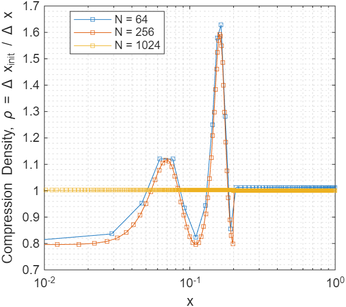
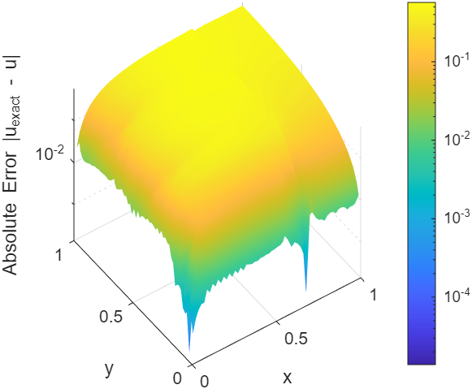
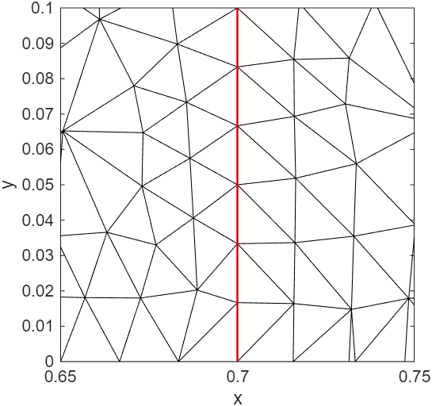
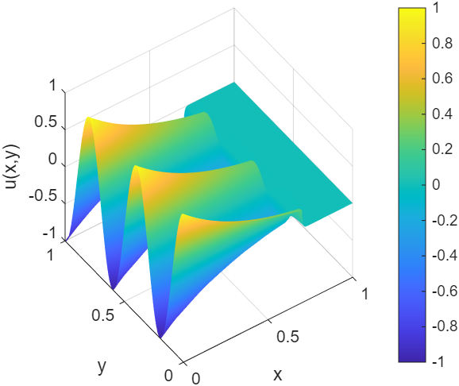
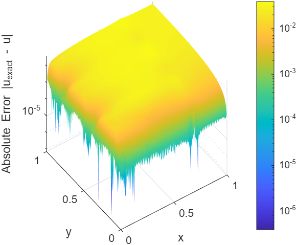
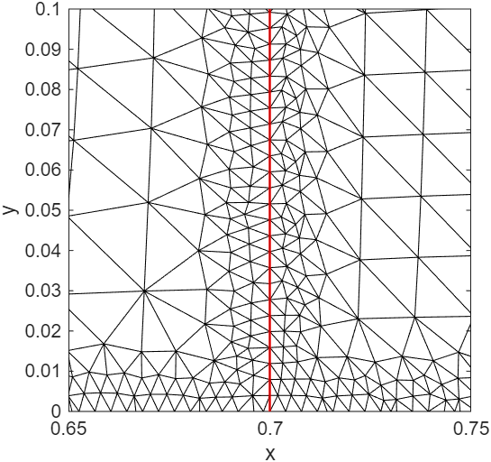

Paper_eng_3
A Preconditioning Procedure for Finite-Volume Jacobians of Steady Quasilinear Elliptic Problems with Discontinuous Diffusion
Kibeom Kim1, Young Jun Yoon2*
1Independent Researcher, Republic of Korea (kohmeutto@gmail.com)
2School of Electronic and Mechanical Engineering, Gyeongkuk National University, Andong, Republic of Korea (yjyoon@gknu.ac.kr)
*Correspondence: Young Jun Yoon
Keywords: Preconditioning; Quasilinear elliptic problem; Discrete Hodge decomposition; Inexact Newton method; Finite volume method
Abstract
Finite-volume discretization of a quasilinear elliptic problem with state-dependent diffusion induces non-normality in the Jacobian. The derivative of the diffusion coefficient with respect to the state variable is multiplied by the gradient of the state, and the resulting product acts as an effective drift that generates an advection-like skew-symmetric component. This asymmetry reduces the numerical stability of both direct and iterative linear solvers. The present work proposes a preconditioning procedure organized in three stages. The first stage diagnoses the source of asymmetry through the antisymmetric part operator, defined as the difference between a linear operator and its formal adjoint. The second stage employs a commutator-based local indicator to drive r-adaptive mesh relocation via a weighted graph Laplacian. The third stage introduces an edge-wise logarithmic ratio indicator that admits a closed-form equivalence with the sum of a geometric volume ratio and a one-dimensional line integral of the drift-to-diffusion ratio. A discrete Helmholtz–Hodge decomposition splits the indicator into an irrotational component, absorbed by a diagonal scaling, and a solenoidal component, identified with the skew-symmetric component of the rescaled Jacobian and subtracted from the Jacobian within an inexact Newton method. A field-of-values argument bounds the spectrum of the preconditioned operator within a complex disk centered at unity. Numerical verification by the method of manufactured solutions on one- and two-dimensional problems with discontinuous diffusion confirms the absorption of non-normality and the spectral clustering predicted by the field-of-values bound.
상태 의존적 확산을 동반하는 준선형 타원형 문제의 유한체적 이산화는 야코비안에 비정규성을 유발한다. 상태 변수에 대한 확산 계수의 미분은 상태 변수의 기울기와 곱해지며, 그 결과로 생기는 곱은 이류 형태의 반대칭 성분을 생성하는 유효 표류로 작용한다. 이러한 비대칭성은 직접 및 반복 선형 솔버의 수치적 안정성을 저하시킨다. 본 연구는 3단계로 구성된 전제조건화 절차를 제안한다. 첫 번째 단계는 선형 연산자와 그 공식 수반의 차이로 정의되는 반대칭부 연산자를 통해 비대칭성의 원인을 진단한다. 두 번째 단계는 가중 그래프 라플라시안을 통한 r-적응형 격자 재배치를 유도하기 위해 교환자 기반의 국소 지표를 활용한다. 세 번째 단계는 모서리 단위의 로그 비율 지표를 도입하며, 이 지표는 기하학적 체적 비율과 표류-확산 비율의 1차원 선적분의 합과 닫힌 형태의 동치성을 가진다. 이산 헬름홀츠-호지 분해는 이 지표를 대각 스케일링에 의해 흡수되는 비회전 성분과, 리스케일링된 야코비안의 반대칭 성분과 동일시되어 비정밀 뉴턴 기법 내에서 야코비안으로부터 감산되는 솔레노이드 성분으로 나눈다. 값의 영역 논증은 전제조건화된 연산자의 스펙트럼을 1을 중심으로 하는 복소 원판 내로 유계한다. 불연속 확산을 갖는 1차원 및 2차원 문제에 대한 제조해 기법을 통한 수치 검증은 비정규성의 흡수와 값의 영역 유계가 예측한 스펙트럼 군집을 확인한다.
1. Introduction
Quasilinear elliptic problems with state-dependent diffusion arise in heat conduction, porous media flow, and semiconductor device modeling. In many such problems, the diffusion coefficient also exhibits discontinuities across material interfaces. The finite volume method (FVM) is a natural discretization for these problems because it preserves local conservation [1, 2]. However, the algebraic Jacobian produced by FVM inherits a structural asymmetry. This asymmetry originates not from the elliptic principal part, but from the linearization of the nonlinear coefficient. Differentiating the flux with respect to the state variable produces a term in which the derivative of the diffusion coefficient is multiplied by the gradient of the state. This product acts on the discrete operator as an effective drift. The Jacobian decomposes into three parts: a self-adjoint diffusive part, a skew-symmetric advective part associated with the effective drift, and a zeroth-order reaction part. The skew-symmetric advective part is the algebraic origin of non-normality.
상태 의존적 확산을 동반하는 준선형 타원형 문제는 열전도, 다공성 매질 유동 및 반도체 소자 모델링에서 발생한다. 이러한 문제들 중 다수에서 확산 계수는 물질 경계면을 가로지르며 불연속성을 보인다. 유한체적법(FVM)은 국소적 보존성을 유지하므로 이러한 문제에 대한 자연스러운 이산화 방법이다 [1, 2]. 그러나 FVM에 의해 생성된 대수적 야코비안은 구조적 비대칭성을 물려받는다. 이러한 비대칭성은 타원형 주부분이 아닌 비선형 계수의 선형화에서 기인한다. 상태 변수에 대해 플럭스를 미분하면 확산 계수의 미분에 상태 변수의 기울기가 곱해진 항이 생성된다. 이 곱은 이산 연산자에서 유효 표류로 작용한다. 야코비안은 세 부분으로 분해된다. 자기 수반 확산부, 유효 표류와 연관된 반대칭 이류부, 그리고 0차 반응부이다. 반대칭 이류부는 비정규성의 대수적 기원이다.
A non-normal operator possesses a non-orthogonal eigenvector basis. With stable eigenvalues, perturbations may exhibit transient growth before asymptotic decay. The behavior of linear solvers depends on the field of values in addition to the spectrum [3, 4, 5]. In iterative methods such as GMRES [6], the convergence rate decreases as the field of values enlarges [7, 8]. In direct methods such as sparse LU factorization, the non-orthogonal eigenvector basis amplifies pivot growth and reduces the stability of the factorization. These characteristics manifest in practice as the condition-number growth under mesh refinement, the slowing of Krylov convergence, and the fragile behavior of Newton iterations near material discontinuities. A common remedy is to add empirical relaxation factors or numerical viscosity. This restores robustness but alters the discrete equation. The heuristic removal of physically inherent advective terms biases the solution trajectory. The present work investigates an alternative approach that diagnoses and rebalances the discrete operator by purely algebraic means. By doing so, the original equation is preserved, and the conditioning of the linear system is improved.
비정규 연산자는 비직교 고유벡터 기저를 가진다. 고윳값이 안정적인 경우에도 섭동은 점근적으로 감쇠하기 전에 일시적 성장(transient growth)을 보일 수 있다. 선형 솔버의 거동은 스펙트럼뿐만 아니라 값의 영역(field of values)에 의해서도 결정된다 [3, 4, 5]. GMRES [6]와 같은 반복 해법에서는 값의 영역이 확장될수록 수렴 속도가 감소한다 [7, 8]. 희소 LU 분해와 같은 직접 해법에서는 비직교 고유벡터 기저가 피벗 성장을 증폭시키고 분해의 안정성을 저하시킨다. 이러한 특성은 실제로 격자 세분화에 따른 조건수 증가, 크릴로프 수렴의 둔화, 그리고 물질 불연속선 부근에서의 뉴턴 반복의 취약한 거동으로 발현된다. 일반적인 해결책은 경험적 이완 계수나 수치적 점성을 추가하는 것이다. 이는 강건성을 회복시키지만 이산 방정식을 변형시킨다. 물리적으로 내재된 이류 형태의 항들을 경험적으로 제거하는 것은 해의 궤적을 편향시킨다. 본 연구는 순수하게 대수적인 방법을 통해 이산 연산자를 진단하고 재균형을 맞추는 대안적인 접근법을 전개한다. 이를 통해 원래의 방정식은 보존되며 선형 시스템의 조건화가 개선된다.
The present work treats the FVM Jacobian as a structured object whose asymmetry is identifiable, locally measurable, and globally rebalanceable. The proposed procedure consists of three stages. The first stage is diagnosis. A Fréchet expansion of the Jacobian about the current state separates the self-adjoint diffusive part, the skew-symmetric advective part, and the reaction part. The diagnosis of non-normality through this structural decomposition is grounded in the Hermitian and skew-Hermitian splitting (HSS) family [9], which uses the structural decomposition of an operator into self-adjoint and skew-symmetric parts as the basis of preconditioning. Pseudospectra and field-of-values analyses characterize the transient growth and the Krylov convergence behavior of these non-normal operators [3, 4].
본 연구는 FVM 야코비안을 비대칭성이 식별 가능하고, 국소적으로 측정 가능하며, 전역적으로 재균형을 맞출 수 있는 구조적 객체로 취급한다. 제안된 절차는 3단계로 구성된다. 첫 번째 단계는 진단이다. 현재 상태에 대한 야코비안의 프레셰 전개는 자기 수반 확산부, 반대칭 이류부, 반응부를 분리한다. 이러한 구조적 분해를 통한 비정규성의 진단은 에르미트 및 반대칭 에르미트 분할(HSS) 계열 [9]에 근간을 두고 있다. 이 접근법은 연산자를 자기 수반부와 반대칭부로 분해하는 구조적 분해를 전제조건화의 기초로 활용한다. 유사스펙트럼 및 값의 영역 분석 [3, 4]은 이러한 비정규 연산자의 일시적 성장 및 크릴로프 수렴 거동을 특성화한다.
The second stage is local correction. A commutator-based local indicator drives r-adaptive mesh relocation. The indicator is obtained from the antisymmetric part operator of the convection at each node, and is subsequently used as the edge weight of a graph Laplacian system whose solution determines the new node coordinates. The construction of the local indicator is presented in Section 3, and the mesh-adaptation step employs standard r-adaptive techniques [10, 11, 12, 13, 14, 15].
두 번째 단계는 국소적 보정이다. 교환자 기반의 국소 지표가 r-적응형 격자 재배치를 유도한다. 이 지표는 각 노드에서 대류의 반대칭부 연산자로부터 얻어지며, 이후 그래프 라플라시안 시스템의 모서리 가중치로 사용되어 새로운 노드 좌표를 결정한다. 국소 지표의 구성은 3장에서 제시되며, 격자 적응 단계는 표준적인 r-적응 기법을 사용한다 [10, 11, 12, 13, 14, 15].
The third stage is global correction. An edge-wise logarithmic ratio indicator is defined from the magnitudes of cross-diagonal Jacobian entries and the local control-volume measures. The first analytical result is a closed-form equivalence: on each edge, the indicator reduces to the sum of a geometric volume ratio and a one-dimensional line integral of the drift-to-diffusion ratio. This equivalence sits between and connects two distinct lines of work. One is the diagonal equilibration of nonsymmetric matrices [16, 17]. The other is the exponential fitting of edge fluxes originating with Scharfetter and Gummel [18], where the natural edge weight for an advection-diffusion problem involves the exponential of that one-dimensional line integral. The second analytical result applies a discrete Helmholtz–Hodge decomposition (DHHD) to the indicator field [19, 20]. The decomposition splits the indicator field into an irrotational component, which is absorbed by a diagonal scaling matrix, and a solenoidal component. The solenoidal component is identified with the skew-symmetric component of the rescaled Jacobian, subtracted from the Jacobian on the left-hand side, and retained inside the nonlinear residual on the right-hand side.
세 번째 단계는 전역적 보정이다. 교차 대각 야코비안 성분의 크기와 국소 검사 체적 측도로부터 모서리 단위의 로그 비율 지표가 정의된다. 첫 번째 분석 결과는 닫힌 형태의 동치성이다. 즉, 각 모서리에서 지표는 기하학적 체적 비율과 표류-확산 비율의 1차원 선적분의 합으로 환원된다. 이 동치성은 두 가지 구분되는 연구 흐름 사이에 위치하며 이들을 연결한다. 하나는 비대칭 행렬의 대각 평형화 [16, 17]이며, 다른 하나는 이류-확산 문제에 대한 자연스러운 모서리 가중치가 1차원 선적분의 지수 함수를 포함하는, Scharfetter와 Gummel [18]로부터 비롯된 모서리 플럭스의 지수 맞춤이다. 두 번째 분석 결과는 지표 장에 이산 헬름홀츠-호지 분해(DHHD) [19, 20]를 적용하는 것이다. 이 분해는 지표 장을 대각 스케일링 행렬에 의해 흡수되는 비회전 성분과 솔레노이드 성분으로 나눈다. 솔레노이드 성분은 리스케일링된 야코비안의 반대칭 성분과 동일시되어 좌변의 야코비안에서 감산되고 우변의 비선형 잔차 내에 유지된다.
The result is an inexact Newton iteration whose preconditioned operator admits a field-of-values bound, with its spectrum contained in a complex disk centered at unity. The diagonal scaling absorbs the irrotational component of the cross-diagonal magnitude imbalance, and the field-of-values bound provides the principal guarantee of the procedure. The condition number of the rescaled Jacobian is reported as an auxiliary diagnostic. The use of an approximate Jacobian within Newton iteration, while preserving the exact nonlinear residual on the right-hand side, conforms to the inexact Newton method [21, 22] and to the Newton–Krylov family of solvers [23, 24, 25, 26]. Through numerical verification by the method of manufactured solutions (MMS) [27, 28] on one- and two-dimensional quasilinear elliptic problems with discontinuous diffusion, the absorption of non-normality and the spectral clustering of the preconditioned operator are confirmed.
결과적으로 전제조건화된 연산자가 값의 영역 유계를 허용하며 스펙트럼이 1을 중심으로 하는 복소 원판 내에 포함되는 비정밀 뉴턴 반복법이 도출된다. 대각 스케일링은 교차 대각 크기 불균형의 비회전 성분을 흡수하며, 값의 영역 유계는 본 절차의 주요 보장을 제공한다. 리스케일링된 야코비안의 조건수는 보조적 진단량으로 보고된다. 우변의 정확한 비선형 잔차를 보존하면서 뉴턴 반복 내에서 근사 야코비안을 사용하는 것은 비정밀 뉴턴 기법 [21, 22] 및 뉴턴–크릴로프 계열 해법 [23, 24, 25, 26]에 부합한다. 불연속 확산을 갖는 1차원 및 2차원 준선형 타원형 문제에 대해 제조해 기법(MMS) [27, 28]에 의한 수치 검증을 통해, 전제조건화된 연산자의 비정규성 흡수 및 스펙트럼 군집을 확인한다.
The paper is organized as follows. Section 2 formulates the quasilinear elliptic problem and analyzes the continuum linearization. Section 3 presents the FVM discretization and the local commutator-based indicator that drives r-adaptive mesh relocation. Section 4 develops the edge-wise logarithmic ratio indicator, proves its closed-form equivalence, and applies the DHHD to the indicator field. Section 5 constructs the preconditioning matrix, establishes the consistency of the inexact Newton iteration, and derives the field-of-values bound. Section 6 reports numerical verification on one- and two-dimensional MMS problems. Section 7 summarizes the work and discusses limitations and directions for future research.
본 논문은 다음과 같이 구성된다. 2장은 준선형 타원형 문제를 정식화하고 연속체 선형화를 분석한다. 3장은 FVM 이산화와 r-적응형 격자 재배치를 유도하는 국소 교환자 기반 지표를 제시한다. 4장은 모서리 단위의 로그 비율 지표를 전개하여 닫힌 형태의 동치성을 증명하고, 지표 장에 DHHD를 적용한다. 5장은 전제조건화 행렬을 구성하고, 비정밀 뉴턴 반복법의 일관성을 입증하며, 값의 영역 유계를 도출한다. 6장은 1차원 및 2차원 MMS 문제에 대한 수치 검증 결과를 보고한다. 7장은 본 연구를 요약하고 한계 및 향후 연구 방향을 논의한다.
2. Quasilinear elliptic problem and finite-volume Jacobian
This section formulates the governing equation and analyzes the linearized operator at the continuum level. Every operator and quantity introduced here acts on functions defined on the continuous domain $\Omega$, with no reference to any discretization. The corresponding discrete realization is treated separately in Section 3.
본 장은 지배 방정식을 정식화하고 선형화된 연산자를 연속체 차원에서 분석한다. 본 장에서 도입되는 모든 연산자와 양은 연속 영역 $\Omega$ 상에 정의된 함수들에 작용하며, 어떠한 이산화도 참조하지 않는다. 이에 대응하는 이산적 구현은 3장에서 별도로 다룬다.
2.1 Governing equation and boundary conditions
Let $\Omega \subset \mathbb{R}^d$ denote a bounded domain with Lipschitz boundary $\partial\Omega$. Consider the quasilinear elliptic equation:
$\mathbb{R}^d$ 내의 립시츠 경계 $\partial\Omega$를 갖는 유계 영역을 $\Omega$라 하자. 다음과 같은 준선형 타원형 방정식을 고려한다.
$$ \nabla \cdot \bigl( p(u, \mathbf{x}) \nabla u \bigr) = q(u, \mathbf{x}) \quad \text{in } \Omega, \tag{1} $$where $u$ is the unknown state variable, $p(u, \mathbf{x})$ is a state-dependent diffusion coefficient that may be discontinuous in $\mathbf{x}$ across material interfaces, and $q(u, \mathbf{x})$ is a state-dependent source term. To ensure the well-posedness of the linearized system and to reflect the negative feedback characteristics of stable physical systems, it is assumed that $\partial q/\partial u \ge 0$ throughout the domain. Under this sign convention, the symmetric part of the Jacobian to be introduced in Section 2.3 is negative definite on the interior block. The boundary $\partial\Omega$ is partitioned into a Dirichlet part $\Gamma_D$ and a Robin part $\Gamma_R$ with prescribed scalars $\alpha$, $\beta$, $\gamma$ and outward unit normal $\mathbf{n}$,
여기서 $u$는 미지의 상태 변수이고, $p(u, \mathbf{x})$는 물질 경계면을 가로지르며 $\mathbf{x}$에 대해 불연속적일 수 있는 상태 의존적 확산 계수이며, $q(u, \mathbf{x})$는 상태 의존적 소스 항이다. 선형화된 시스템의 적격성(well-posedness)을 확보하고 안정적인 물리계의 음의 피드백 특성을 반영하기 위하여 영역 전체에서 $\partial q/\partial u \ge 0$이라고 가정한다. 이 부호 규약 하에서 2.3절에서 도입될 야코비안의 대칭부는 내부 블록에서 음의 정부호이다. 경계 $\partial\Omega$는 디리클레 부분 $\Gamma_D$와 로빈 부분 $\Gamma_R$로 나뉘며, 여기서 $\alpha$, $\beta$, $\gamma$는 규정된 스칼라 값이며 $\mathbf{n}$은 외부를 향하는 단위 법선 벡터이다.
$$ u = u_D \quad \text{on } \Gamma_D, \tag{2a} $$$$ \alpha u + \beta\, p(u, \mathbf{x}) \nabla u \cdot \mathbf{n} = \gamma \quad \text{on } \Gamma_R. \tag{2b} $$The Robin condition affects diagonal dominance and introduces skew-symmetric contributions during the assembly of the algebraic Jacobian. The diffusion coefficient is assumed to be bounded and strictly positive on each subdomain separated by material interfaces. Across an interface, the standard transmission condition applies. The state variable is continuous, and the normal component of the flux $p \nabla u \cdot \mathbf{n}$ is continuous. The state variable resides in the Sobolev space $H^1(\Omega)$ of square-integrable functions with square-integrable weak derivatives, while its gradient may exhibit a jump discontinuity at the interface.
로빈 조건은 대수적 야코비안을 조립하는 과정에서 대각 지배성에 영향을 미치고 반대칭 기여분을 발생시킨다. 확산 계수는 물질 경계면에 의해 분리된 각 부분 영역 내에서 유계이며 0보다 엄격히 크다고 가정한다. 경계면을 가로질러서는 표준 전달 조건이 적용된다. 상태 변수와 플럭스의 법선 성분인 $p \nabla u \cdot \mathbf{n}$은 모두 연속이다. 상태 변수는 함수와 그 1계 약도함수가 모두 제곱 적분 가능한 소볼레프 공간 $H^1(\Omega)$에 속하지만 그 기울기는 경계면에서 도약 불연속성을 가질 수 있다.
2.2 FVM semi-discretization
The domain $\Omega$ is partitioned into a finite collection of non-overlapping control volumes $\{\Omega_i\}_{i=1}^{N}$ such that $\overline{\Omega} = \bigcup_i \overline{\Omega_i}$ [1, 2]. Each control volume $\Omega_i$ has a measure $V_i$ and is associated with a single nodal degree of freedom $u_i$ representing the cell-averaged state. Two control volumes $\Omega_i$ and $\Omega_j$ that share a face form an edge of the mesh graph. The face has area $A_{ij}$ and outward unit normal $\mathbf{n}_{ij}$ pointing from $\Omega_i$ to $\Omega_j$. In one dimension, $A_{ij}$ reduces to unity and the mesh graph is a chain with no closed loops; in two dimensions, the mesh graph contains closed loops, a topological distinction that is exploited in Sections 5 and 6. Integrating the governing equation over $\Omega_i$ and applying the divergence theorem yields the discrete conservation law:
영역 $\Omega$는 $\overline{\Omega} = \bigcup_i \overline{\Omega_i}$를 만족하도록 겹치지 않는 유한 개의 검사 체적 $\{\Omega_i\}_{i=1}^{N}$으로 분할된다 [1, 2]. 각 검사 체적 $\Omega_i$는 측도 $V_i$를 가지며, 셀 평균 상태를 나타내는 단일 노드 자유도 $u_i$와 연결된다. 면을 공유하는 두 검사 체적 $\Omega_i$와 $\Omega_j$는 격자 그래프의 모서리를 형성한다. 이 면은 면적 $A_{ij}$를 가지며, $\Omega_i$에서 $\Omega_j$로 향하는 외부 단위 법선 벡터 $\mathbf{n}_{ij}$를 갖는다. 1차원에서는 $A_{ij}$가 1로 단순화되고 격자 그래프는 닫힌 루프가 없는 사슬 형태가 된다. 2차원에서는 격자 그래프가 닫힌 루프를 포함하며, 이러한 위상적 구별은 5장과 6장에서 활용된다. 지배 방정식을 $\Omega_i$에 대해 적분하고 발산 정리를 적용하면 이산 보존 법칙이 도출된다.
$$ \sum_{j \in \mathcal{N}(i)} \Gamma_{i \to j}(\mathbf{u}) - V_i\, \overline{q}_i(\mathbf{u}) = 0, \tag{3} $$where $\mathcal{N}(i)$ is the set of neighbors of node $i$, $\Gamma_{i \to j}$ is the discrete flux from $\Omega_i$ to $\Omega_j$ across the shared face, and $\overline{q}_i(u_i)$ is the state-dependent cell-averaged source. The discrete divergence operator $\hat{D}$ on the mesh graph is defined as the assembled sum of edge fluxes acting on a nodal field. Its action on a nodal field $\boldsymbol{\phi}$ at node $k$ has entries $[\hat{D}\boldsymbol{\phi}]_k = \sum_j \hat{D}_{kj}\phi_j$ and possesses the zero-sum property $\sum_j \hat{D}_{kj} = 0$. This property is the discrete counterpart of the divergence theorem applied to a constant field [29, 30, 31]. The operator $\hat{D}$ is the discrete realization of the continuous operator $\nabla\cdot$ on $\Omega$. Collecting the nodal balances over all interior degrees of freedom produces the algebraic residual vector:
여기서 $\mathcal{N}(i)$는 노드 $i$의 이웃 노드 집합, $\Gamma_{i \to j}$는 공유된 면을 가로질러 $\Omega_i$에서 $\Omega_j$로 향하는 이산 플럭스, $\overline{q}_i$는 셀 평균 소스이다. 격자 그래프 상의 이산 발산 연산자 $\hat{D}$는 노드 장에 작용하는 모서리 플럭스들의 조립된 합으로 정의된다. 노드 장 $\boldsymbol{\phi}$에 대한 노드 $k$에서의 작용은 $[\hat{D}\boldsymbol{\phi}]_k = \sum_j \hat{D}_{kj}\phi_j$ 성분들을 가지며, $\sum_j \hat{D}_{kj} = 0$이라는 합산 영(zero-sum) 특성을 지닌다. 이 특성은 상수 장에 적용된 발산 정리의 이산적 대응물이다 [29, 30, 31]. 연산자 $\hat{D}$는 $\Omega$ 상의 연속 연산자 $\nabla\cdot$의 이산적 구현체이다. 모든 내부 자유도에 걸쳐 노드 균형을 취합하면 대수적 잔차 벡터가 생성된다.
$$ \mathbf{F}(\mathbf{u}) = \hat{D}\bigl( p(\mathbf{u})\, \hat{D}\mathbf{u} \bigr) - \mathbf{q}(\mathbf{u}) \in \mathbb{R}^N, \tag{4} $$where the diffusive flux is constructed by an edge-based two-point approximation that satisfies the transmission condition at material interfaces. The local conservation identity $\Gamma_{j \to i} = -\Gamma_{i \to j}$ holds exactly at the discrete level by the construction of the flux.
여기서 확산 플럭스는 물질 경계면에서의 전달 조건을 만족하는 모서리 기반의 2점 근사를 통해 구성된다. 국소 보존 항등식 $\Gamma_{j \to i} = -\Gamma_{i \to j}$는 플럭스의 구성 방식에 의해 이산 수준에서 정확히 성립한다.
2.3. The Jacobian and its symmetric and skew-symmetric parts
The Jacobian $\hat{J} = \partial \mathbf{F}/\partial \mathbf{u}$ is the linearization of the residual vector about the current state. The Fréchet expansion of $\mathbf{F}(\mathbf{u})$ separates into three operator components according to the differentiation of the diffusive flux and the source term:
야코비안 $\hat{J} = \partial \mathbf{F}/\partial \mathbf{u}$는 현재 상태에 대한 잔차 벡터의 선형화이다. $\mathbf{F}(\mathbf{u})$의 프레셰 전개는 확산 플럭스와 소스 항의 미분에 따라 세 가지 연산자 성분으로 분리된다.
$$ \hat{J}\,\delta\mathbf{u} \;=\; \hat{L}_2\,\delta\mathbf{u} + \hat{L}_1\,\delta\mathbf{u} + \hat{L}_0\,\delta\mathbf{u} \;=\; \hat{D}\bigl(p(\mathbf{u})\,\hat{D}\,\delta\mathbf{u}\bigr) + \hat{D}\!\left(\frac{\partial p}{\partial u}\,(\hat{D}\mathbf{u})\,\delta\mathbf{u}\right) - \frac{\partial \mathbf{q}}{\partial \mathbf{u}}\,\delta\mathbf{u}. \tag{5} $$The three operators on the right-hand side are, in order, the principal diffusive operator $\hat{L}_2$, the advection-like operator $\hat{L}_1$ arising from the linearization of $p(\mathbf{u})$, and the reaction operator $\hat{L}_0 = -\partial\mathbf{q}/\partial\mathbf{u}$. Under the sign convention $\partial q/\partial u \ge 0$ adopted in Section 2.1, $\hat{L}_0$ contributes non-positively along the diagonal. Within the advection-like operator, the linearization product enters as an effective drift velocity:
우변의 세 연산자는 각각 주요 확산 연산자 $\hat{L}_2$, $p(\mathbf{u})$의 선형화에서 비롯되는 이류 형태의 연산자 $\hat{L}_1$, 그리고 반응 연산자 $\hat{L}_0 = -\partial\mathbf{q}/\partial\mathbf{u}$이다. 2.1절에서 채택한 부호 규약 $\partial q/\partial u \ge 0$ 하에서 $\hat{L}_0$는 대각선 상에서 비양의 기여를 한다. 이류 형태의 연산자 내에서 선형화 곱은 유효 표류 속도로 나타난다.
$$ \mathbf{v} = \frac{\partial p}{\partial u} \nabla u. \tag{6} $$The diffusive operator $\hat{L}_2$ inherits the self-adjoint structure of the elliptic principal part. The reaction operator $\hat{L}_0$ acts by pointwise multiplication and is therefore symmetric. The advection-like operator $\hat{L}_1$ does not share this structure. Its formal adjoint differs from $\hat{L}_1$ itself, and it is the unique source of asymmetry within the Fréchet decomposition. The discrete form of $\hat{L}_1$ at the node level, together with the analytical characterization of the asymmetry it introduces, is the subject of Section 2.4.
확산 연산자 $\hat{L}_2$는 타원형 주부분의 자기수반 구조를 물려받는다. 반응 연산자 $\hat{L}_0$는 점별 곱셈으로 작용하므로 대칭적이다. 이류 형태의 연산자 $\hat{L}_1$은 이러한 구조를 공유하지 않는다. 그 공식 수반은 $\hat{L}_1$ 자체와 다르며, 프레셰 분해 내에서 비대칭성의 유일한 원천이 된다. 노드 수준에서의 $\hat{L}_1$의 이산 형태와 그것이 유발하는 비대칭성의 분석적 특성화는 2.4절의 주제이다.
2.4. Origin of the advection-like asymmetry
The Jacobian $\hat{J}$ is the discrete realization of $L_2 + L_1 + L_0$, so the source of any asymmetry must lie in the continuous adjoint structure of these three operators. For any linear operator $L$ acting on a complex Hilbert space $\mathcal{H}$ with inner product $\langle \phi, \psi \rangle = \int_\Omega \phi^*\psi\, d\Omega$, the antisymmetric part operator is defined as
야코비안 $\hat{J}$는 $L_2 + L_1 + L_0$의 이산적 구현체이므로, 어떠한 비대칭성의 원천도 이 세 연산자의 연속 수반 구조에 있어야 한다. 내적 $\langle \phi, \psi \rangle = \int_\Omega \phi^*\psi\, d\Omega$를 갖는 복소 힐베르트 공간 $\mathcal{H}$에 작용하는 임의의 선형 연산자 $L$에 대해, 반대칭부 연산자는 다음과 같이 정의된다.
$$ \mathcal{R}(L) = L - L^\dagger, \tag{7} $$where $L^\dagger$ denotes the formal adjoint of $L$ with respect to this inner product. The operator $\mathcal{R}$ is additive in $L$. On compactly supported test functions, direct calculation yields $\mathcal{R}(L_2) = 0$ because the diffusion operator is self-adjoint in the interior, and $\mathcal{R}(L_0) = 0$ because the reaction operator is multiplication by a real-valued function. The non-trivial contribution originates entirely from $\mathcal{R}(L_1)$.
여기서 $L^\dagger$는 위 내적에 대한 $L$의 공식 수반을 의미한다. 연산자 $\mathcal{R}$은 $L$에 대해 가법적이다. 콤팩트 지지 시험 함수에 대한 직접 계산은 다음을 산출한다. 확산 연산자는 내부에서 자기수반이므로 $\mathcal{R}(L_2) = 0$이며, 반응 연산자는 실수값 함수의 곱셈이므로 $\mathcal{R}(L_0) = 0$이다. 비자명한 기여분은 전적으로 $\mathcal{R}(L_1)$에서 기인한다.
The continuous form of $\mathcal{R}(L_1)$ is derived through a weak-form calculation. Let $\phi$ and $\psi$ be smooth, compactly supported test functions on $\Omega$. Integration by parts applied to $\langle \phi, L_1 \psi\rangle_\Omega = \int_\Omega \phi\, \nabla\cdot(\mathbf{v}\psi)\, d\Omega$ yields the formal adjoint $L_1^\dagger \phi = -\mathbf{v}\cdot\nabla\phi$ when boundary terms vanish on $\partial\Omega$. Substituting $L_1\psi = (\nabla\cdot\mathbf{v})\psi + \mathbf{v}\cdot\nabla\psi$ and $L_1^\dagger\psi = -\mathbf{v}\cdot\nabla\psi$ into the definition of $\mathcal{R}$ gives
$\mathcal{R}(L_1)$의 연속 형태는 약형식 계산을 통해 도출된다. $\phi$와 $\psi$를 $\Omega$ 상의 매끄러운 콤팩트 지지 시험 함수라 하자. $\langle \phi, L_1 \psi\rangle_\Omega = \int_\Omega \phi\,\nabla\cdot(\mathbf{v}\psi)\,d\Omega$에 부분 적분을 적용하면 $\partial\Omega$에서 경계 항이 소멸할 때 공식 수반 $L_1^\dagger \phi = -\mathbf{v}\cdot\nabla\phi$가 도출된다. 라이프니츠 법칙으로부터 $L_1\psi = (\nabla\cdot\mathbf{v})\psi + \mathbf{v}\cdot\nabla\psi$이며 $L_1^\dagger\psi = -\mathbf{v}\cdot\nabla\psi$이므로, $\mathcal{R}$의 정의에 대입하면 다음을 얻는다.
$$ \langle \phi, \mathcal{R}(L_1) \psi \rangle_\Omega = \langle \phi, (\nabla \cdot \mathbf{v})\, \psi + 2\, \mathbf{v} \cdot \nabla \psi \rangle_\Omega. \tag{8} $$The right-hand side comprises the divergence of the effective drift acting on the state perturbation and twice the homogeneous advection of the perturbation along $\mathbf{v}$.
우변은 상태 섭동에 작용하는 유효 표류의 발산과 $\mathbf{v}$를 따른 섭동의 동차 이류의 두 배로 구성된다.
The connection to the Jacobian is now established at the matrix level. The skew-symmetric part $\hat{A} = \tfrac{1}{2}(\hat{J} - \hat{J}^T)$ collects the asymmetry of $\hat{J}$ in algebraic form, and its interior part is the discrete realization of $\tfrac{1}{2}\mathcal{R}(L_1)$ assembled on the FVM mesh. When $\hat{L}_1$ is absent, $\mathcal{R}(L_1) = 0$ and $\hat{A}$ vanishes on the interior block accordingly. Under the sign convention of Section 2.1, $\hat{J}$ then reduces to a symmetric operator with a negative-definite symmetric part on the interior. When $\hat{L}_1$ is present, $\hat{A}$ is non-zero, and its magnitude relative to the symmetric part determines the non-normality of $\hat{J}$ [9]. The right-hand side of (8) is therefore the analytical target that the discrete construction in Section 3 reproduces locally and that the global correction in Sections 4 and 5 rebalances algebraically.
야코비안과의 연결은 행렬 차원에서 이루어진다. 반대칭부 $\hat{A} = \tfrac{1}{2}(\hat{J} - \hat{J}^T)$는 $\hat{J}$의 비대칭성을 대수적 형태로 수집하며, 그 내부 부분은 FVM 격자 상에 조립된 $\tfrac{1}{2}\mathcal{R}(L_1)$의 이산적 구현체이다. $\hat{L}_1$이 없을 때 $\mathcal{R}(L_1) = 0$이고 그에 따라 $\hat{A}$는 내부 블록에서 소멸하며, 2.1절의 부호 규약 하에서 $\hat{J}$는 내부에서 음의 정부호 대칭부를 갖는 대칭 연산자로 환원된다. $\hat{L}_1$이 존재할 때 $\hat{A}$는 0이 아니며, 대칭부에 대한 그 상대적 크기가 $\hat{J}$의 비정규성을 결정한다 [9]. 따라서 식 (8)의 우변은 3장의 이산적 구성이 국소적으로 재현하고 4장과 5장의 전역적 보정이 대수적으로 재균형하는 분석적 대상이다.
The Robin boundary $\Gamma_R$ introduced in Section 2.1 contributes to $\hat{A}$ through the surface terms of the integration by parts and through the cross-coupling between $u$ and $\mathbf{n}\cdot\nabla u$ in the boundary condition. These contributions are confined to the rows of $\hat{A}$ associated with boundary nodes and are preserved unchanged throughout the procedure, since modifying them would alter the discretized form of the boundary conditions. Section 5.2 introduces a diagonal projection matrix $\hat{M}_s$ that separates the interior contribution from the boundary contribution, so that the algebraic correction acts only on the interior part.
2.1절에서 도입된 로빈 경계 $\Gamma_R$은 부분 적분의 표면 항과 경계 조건에서의 $u$와 $\mathbf{n}\cdot\nabla u$ 사이의 교차 결합을 통해 $\hat{A}$에 기여한다. 이러한 기여는 경계 노드와 연관된 $\hat{A}$의 행에 한정되며, 이를 수정하면 경계 조건의 이산 형태가 변경되므로 본 절차 전반에 걸쳐 변경 없이 보존된다. 5.2절에서는 대각 사영 행렬 $\hat{M}_s$를 도입하여 내부 기여를 경계 기여로부터 분리하며, 대수적 보정은 내부 부분에만 작용한다.
3. Local indicator and mesh adaptation
The first algorithmic stage of the proposed procedure addresses the local geometry of the mesh. The objective is to concentrate control volumes in regions where the advection-like term assembled from $\hat{L}_1$ produces large discrete commutator errors, without introducing tangling or topological inversion. The procedure follows standard r-adaptive mesh methods based on the weighted graph Laplacian [10, 11, 12, 13, 14, 15].
제안된 절차의 첫 번째 알고리즘 단계는 격자의 국소 기하 구조를 다룬다. 목적은 $\hat{L}_1$에서 조립된 이류 형태의 항이 큰 이산 교환자 오차를 발생시키는 영역에 검사 체적을 집중시키는 것이며, 이 과정에서 얽힘(tangling)이나 위상학적 역전(topological inversion)을 유발하지 않아야 한다. 이 절차는 가중 그래프 라플라시안에 기반한 표준 r-적응형 격자 기법을 따른다 [10, 11, 12, 13, 14, 15].
3.1. Discrete projection of the convective residue
The local indicator is constructed from the discrete realization of the two terms on the right-hand side of (8), assembled at each node of the FVM mesh. For any nodal field $\psi$ and any nodal velocity field $v$, the total discrete divergence at node $k$ of the product $v\psi$, in terms of the operator $\hat{D}$ introduced in Section 2.2, is
국소 지표는 FVM 격자의 각 노드에서 조립된 식 (8) 우변 두 항의 이산적 구현체로부터 구성된다. 임의의 노드 장 $\psi$와 임의의 노드 속도 장 $v$에 대해, 2.2절에서 도입된 연산자 $\hat{D}$로 표현된 노드 $k$에서 곱 $v\psi$의 총 이산 발산은 다음과 같다.
$$ [\hat{D}(v\psi)]_k = \sum_{j} \hat{D}_{kj}\, v_j\, \psi_j. \tag{9} $$Subtracting the identically zero term $v_k\psi_k \sum_j \hat{D}_{kj}$ recasts the right-hand side in relative form:
항등적으로 0인 항 $v_k\psi_k \sum_j \hat{D}_{kj}$를 감산하면 우변이 상대적인 형태로 변환된다.
$$ [\hat{D}(v\psi)]_k = \sum_{j} \hat{D}_{kj}\, ( v_j\psi_j - v_k\psi_k ). \tag{10} $$The factor inside the parenthesis is split as $v_j\psi_j - v_k\psi_k = (v_j - v_k)\,\psi_j + v_k\,(\psi_j - \psi_k)$. The discrete divergence at node $k$ separates into two contributions:
괄호 안의 인수는 $v_j\psi_j - v_k\psi_k = (v_j - v_k)\,\psi_j + v_k\,(\psi_j - \psi_k)$로 분리된다. 노드 $k$에서의 이산 발산은 두 기여분으로 나뉜다.
$$ [\hat{D}(v\psi)]_k = \sum_{j} (v_j - v_k)\, \hat{D}_{kj}\, \psi_j + \sum_{j} v_k\, \hat{D}_{kj}\, (\psi_j - \psi_k). \tag{11} $$By the zero-sum property, the second sum reduces to $\sum_j v_k \hat{D}_{kj}\psi_j$, which represents the standard discrete realization of the homogeneous advection $v \cdot \nabla \psi$ at node $k$. The first sum is already in the form $\sum_j (v_j - v_k)\hat{D}_{kj}\psi_j$, representing the discrete realization of the divergence of the drift acting on $\psi$. Including the second sum with a factor of two, consistent with the weak-form identity of Section 2.4, yields the total discrete convective residue at node $k$:
합산 영 특성에 의해 두 번째 합은 $\sum_j v_k \hat{D}_{kj}\psi_j$로 환원되며, 이는 노드 $k$에서 동차 이류 $v \cdot \nabla \psi$의 표준적인 이산 구현체를 나타낸다. 첫 번째 합은 이미 $\sum_j (v_j - v_k)\hat{D}_{kj}\psi_j$ 형태이며, 이는 $\psi$에 작용하는 표류 발산의 이산 구현체를 나타낸다. 2.4절의 약형 항등식에 따라 두 번째 합에 인자 2를 곱하여 더하면 노드 $k$에서의 총 이산 대류 잔차가 도출된다.
$$ [(\nabla\cdot v)\psi + 2 v\cdot\nabla\psi]_k = \sum_{j} \bigl[\, (v_j - v_k)\, \hat{D}_{kj}\, \psi_j + 2\, v_k\, \hat{D}_{kj}\, \psi_j \,\bigr] = \sum_{j} T_{kj}. \tag{12} $$The summand simplifies to
피가수(summand)는 다음과 같이 단순화된다.
$$ T_{kj} = ( v_j + v_k )\, \hat{D}_{kj}\, \psi_j, \tag{13} $$which represents the local directional tension transferred along the edge from node $k$ to node $j$. The quantity $T_{kj}$ inherits a sign from the orientation of the edge. To obtain a non-negative scalar invariant under reversal, the local indicator on the edge $(k, j)$ is defined as
이는 노드 $k$에서 노드 $j$로 모서리를 따라 전달되는 국소 방향성 장력을 나타낸다. 양 $T_{kj}$는 모서리의 방향으로부터 부호를 물려받는다. 방향이 반전되어도 상쇄되지 않는 음이 아닌 스칼라를 얻기 위해 모서리 $(k, j)$에서의 국소 지표를 다음과 같이 정의한다.
$$ S_{kj} = \tfrac{1}{2}\bigl( |T_{kj}| + |T_{jk}| \bigr). \tag{14} $$The indicator $S_{kj}$ measures the local imbalance of the convective residue across the edge. It attains large values where the effective drift varies significantly between adjacent nodes or where the state perturbation exhibits a sharp gradient. It is identically zero when the advection-like contribution is absent ($\partial p/\partial u = 0$).
지표 $S_{kj}$는 모서리를 가로지르는 대류 잔차의 국소적 불균형을 측정한다. 이 값은 인접한 노드 간에 유효 표류가 크게 변하거나 상태 섭동이 급격한 기울기를 가질 때 커진다. 이류 형태의 기여분이 없을 때, 즉 $\partial p/\partial u = 0$일 때 이 값은 항등적으로 0이 된다.
3.2. Weighted graph Laplacian and r-adaptive relocation
The local indicator $S_{kj}$ is incorporated into a weighted graph Laplacian system to determine the new node coordinates [13, 14, 32, 33]. A dimensionless indicator is obtained by normalizing $S_{kj}$ with its global maximum:
국소 지표 $S_{kj}$는 새로운 노드 좌표를 결정하는 가중 그래프 라플라시안 시스템에 통합된다 [13, 14, 32, 33]. $S_{kj}$를 전역 최댓값으로 정규화하여 무차원 지표를 얻는다.
$$ \bar{S}_{kj} = \frac{S_{kj}}{\max_{(m,n)} S_{mn}}, \tag{15a} $$$$ W_{kj} = 1 + \bar{S}_{kj}. \tag{15b} $$The unit baseline ensures the positive definiteness of the Laplacian system and bounds the local stiffness from below. This bounded stiffness limits the magnitude of local deformation, preventing the topological inversion of cells during relocation. Treating the mesh as a network of springs with stiffness $W_{kj}$, the equilibrium position $X_i$ of an interior node $i$ is determined by a zero net spring force:
단위 기준값(unit baseline)은 라플라시안 시스템의 양의 정부호성을 보장하고 국소 강성(stiffness)의 하한을 제한한다. 이러한 제한된 강성은 국소 변형의 크기를 제한하여 재배치 시 셀의 위상학적 역전을 방지한다. 격자를 강성 $W_{kj}$를 가진 스프링 네트워크로 취급하면, 내부 노드 $i$의 평형 위치 $X_i$는 순 스프링 힘이 0이 되는 지점으로 결정된다.
$$ \sum_{j \in \mathcal{N}(i)} W_{ij} ( X_i - X_j ) = 0. \tag{16} $$The diagonal sum $\sum_{j} W_{ij}$ defines the entry $K_{ii}$ of the degree matrix $\hat{K}$. Letting $\hat{W}$ denote the global adjacency matrix assembled from the edge weights, the local equilibrium conditions assemble into the global pure graph Laplacian:
대각합 $\sum_{j} W_{ij}$는 차수 행렬(degree matrix) $\hat{K}$의 $K_{ii}$ 성분을 정의한다. $\hat{W}$를 모서리 가중치로부터 조립된 전역 인접 행렬(adjacency matrix)이라 할 때, 국소 평형 조건들은 전역 순수 그래프 라플라시안으로 조립된다.
$$ \hat{L}_{\mathrm{sys}} = \hat{K} - \hat{W}. \tag{17} $$The matrix $\hat{L}_{\mathrm{sys}}$ is singular, possessing a one-dimensional null space corresponding to rigid translation. To enforce a unique solution, Dirichlet boundary conditions are applied by clamping the boundary nodes to a reference coordinate vector $\mathbf{B}_{\mathrm{ref}}$. The clamped operator $\tilde{L}_{\mathrm{sys}}$ is invertible, and the new interior coordinates are obtained from
행렬 $\hat{L}_{\mathrm{sys}}$는 특이 행렬(singular)이며 강체 이동에 해당하는 1차원 영공간(null space)을 가진다. 유일해를 구하기 위해 경계 노드들을 기준 좌표 벡터 $\mathbf{B}_{\mathrm{ref}}$에 고정함으로써 디리클레 경계 조건을 부과한다. 고정된 연산자 $\tilde{L}_{\mathrm{sys}}$는 가역적이며, 새로운 내부 좌표는 다음 식으로부터 얻어진다.
$$ \tilde{L}_{\mathrm{sys}} \mathbf{X}_{\mathrm{new}} = \mathbf{B}_{\mathrm{ref}}. \tag{18} $$Because $\bar{S}_{kj}$ is bounded above by unity, each edge weight resides in the interval $[1.0, 2.0]$. This bound, combined with the diagonal dominance induced by the degree matrix, ensures that relocation does not invert cells in either one or two dimensions. Following relocation, each control volume measure $\tilde{V}_k$ is recomputed in the new coordinate system, producing the dual volume metric matrix:
$\bar{S}_{kj}$의 상한이 1이므로 각 모서리 가중치는 $[1.0, 2.0]$ 구간 내에 존재한다. 이 상한은 차수 행렬에 의해 유도된 대각 지배성과 결합되어 1차원 또는 2차원에서 재배치가 셀을 역전시키지 않음을 보장한다. 재배치 후, 각 검사 체적 측도 $\tilde{V}_k$는 새로운 좌표계에서 다시 계산되어 이중 체적 계량 행렬(dual volume metric matrix)을 산출한다.
$$ \hat{G} = \mathrm{diag}( \tilde{V}_0,\, \tilde{V}_1,\, \ldots,\, \tilde{V}_{N-1} ). \tag{19} $$The matrix $\hat{G}$ encodes the geometric scaling of the relocated mesh and provides the geometric metric used in the algebraic constructions of Sections 4 and 5.
행렬 $\hat{G}$는 재배치된 격자의 기하학적 스케일링을 부호화하며, 4장과 5장의 대수적 구성에서 사용되는 기하 계량을 제공한다.
4. Global edge indicator and its closed form
This section introduces a global edge-wise indicator that quantifies the cross-diagonal magnitude imbalance of the FVM Jacobian, alongside a closed-form equivalence that reduces the indicator to two physically interpretable quantities. This indicator directs the construction of the diagonal scaling matrix $\hat{C}$ in Section 5. The closed form connects the present method to the exponential fitting approach of Scharfetter and Gummel [18], providing mathematical justification for treating the indicator field as the sum of an irrotational and a solenoidal part.
본 장은 전역 모서리 단위 지표를 도입한다. 이 지표는 FVM 야코비안의 교차 대각 크기 불균형을 정량화한다. 또한 이 지표를 물리적으로 해석 가능한 두 양으로 환원하는 닫힌 형태의 동치성을 함께 제시한다. 이 지표는 5장에서 대각 스케일링 행렬 $\hat{C}$의 구성을 유도한다. 그 닫힌 형태는 본 기법을 Scharfetter와 Gummel [18]의 지수 맞춤 접근법과 연결한다. 나아가 지표 장을 비회전 성분과 솔레노이드 성분의 합으로 취급하기 위한 수학적 정당성을 제공한다.
4.1 Definition of the edge log-ratio indicator
Section 3 provides the relocated mesh and $\hat{G}$. Section 2 provides the FVM Jacobian $\hat{J}$ and its skew-symmetric part $\hat{A}$. To algebraically rebalance the cross-diagonal magnitudes of $\hat{J}$, a diagonal scaling matrix $\hat{C}$ with strictly positive entries is introduced, and the rescaled Jacobian is defined as
3장의 결과물은 재배치된 격자와 $\hat{G}$이다. 2장의 결과물은 FVM 야코비안 $\hat{J}$와 그 반대칭부 $\hat{A}$이다. $\hat{J}$의 교차 대각 크기를 대수적으로 재균형 맞추기 위해 양의 성분만을 갖는 대각 스케일링 행렬 $\hat{C}$를 도입하고, 리스케일링된 야코비안을 다음과 같이 정의한다.
$$ \tilde{J} = \hat{C}\hat{G}\hat{J}. \tag{20} $$The matrix $\hat{C}$ is chosen so that $\tilde{J}$ approximately satisfies the cross-diagonal magnitude balance $|\tilde{J}_{ij}| = |\tilde{J}_{ji}|$ for all adjacent pairs $(i, j)$. Expanding $\tilde{J}_{ij}$ in components yields the local equality $c_i |(\hat{G}\hat{J})_{ij}| = c_j |(\hat{G}\hat{J})_{ji}|$, where $c_i$ denotes the $i$-th diagonal entry of $\hat{C}$. To enforce positivity, the entries are parametrized exponentially as $c_i = e^{z_i}$ with $z_i \in \mathbb{R}$, so that $\hat{C} = \mathrm{diag}(e^{z_1}, \ldots, e^{z_N})$. Taking the natural logarithm of both sides produces the additive form
행렬 $\hat{C}$는 $\tilde{J}$가 모든 인접 쌍 $(i, j)$에 대해 교차 대각 크기 균형 $|\tilde{J}_{ij}| = |\tilde{J}_{ji}|$를 근사적으로 만족하도록 선택된다. $\tilde{J}_{ij}$를 성분별로 전개하면 국소적 등식 $c_i |(\hat{G}\hat{J})_{ij}| = c_j |(\hat{G}\hat{J})_{ji}|$가 도출되며, 여기서 $c_i$는 $\hat{C}$의 $i$번째 대각 성분이다.
$$ z_i - z_j = \ln \!\left( \frac{|(\hat{G}\hat{J})_{ji}|}{|(\hat{G}\hat{J})_{ij}|} \right) = b_{ij}. \tag{21} $$The right-hand side defines the edge log-ratio indicator $b_{ij}$ on the mesh graph. The left-hand side $z_i - z_j$ is the discrete differential of the nodal potential $\mathbf{Z} = (z_1, \ldots, z_N)^T$ associated with the edge between nodes $i$ and $j$, with the sign convention fixed by the magnitude balance condition. The value $b_{ij}$ is measured directly from the entries of $\hat{G}\hat{J}$. Collecting the equations across all edges yields the overdetermined linear system
우변은 격자 그래프 상에 모서리 로그 비율 지표 $b_{ij}$를 정의한다. 좌변 $z_i - z_j$는 노드 $i$와 $j$ 사이의 모서리에 연관된 노드 퍼텐셜 $z$의 이산 미분이며, 그 부호 규약은 크기 균형 조건에 의해 결정된다. 값 $b_{ij}$는 $\hat{G}\hat{J}$의 성분들로부터 직접 계산된다. 모든 모서리에 걸쳐 방정식을 취합하면 다음의 과결정(overdetermined) 선형 시스템이 도출된다.
$$ \hat{S}\,\mathbf{Z} = \mathbf{b}, \tag{22} $$where $\hat{S}$ is the edge–node incidence matrix of the mesh graph, with entries in $\{-1, 0, 1\}$ depending on the edge orientation. The matrix $\hat{S}$ acts as a discrete gradient mapping nodal potentials to edge values, while its transpose $\hat{S}^T$ acts as a discrete divergence mapping edge values back to nodes. The system $\hat{S}\mathbf{Z} = \mathbf{b}$ is generally inconsistent because the right-hand side $\mathbf{b}$ may carry a non-trivial circulation around closed loops of the mesh graph. This inconsistency necessitates the DHHD of $\mathbf{b}$ detailed in Section 5.
여기서 $\hat{S}$는 격자 그래프의 모서리-노드 결합 행렬이다. 이 행렬은 모서리의 방향에 따라 $\{-1, 0, 1\}$ 중 하나의 성분을 갖는다. 행렬 $\hat{S}$는 노드 퍼텐셜을 모서리 값으로 사상하는 이산 기울기 역할을 한다. 그 전치 행렬 $\hat{S}^T$는 모서리 값을 노드로 되돌려 사상하는 이산 발산 역할을 한다. 우변 $\mathbf{b}$는 격자 그래프의 닫힌 루프 주위로 영이 아닌 순환을 가질 수 있다. 시스템 $\hat{S}\mathbf{Z} = \mathbf{b}$는 일반적으로 불일치(inconsistent)한다. 이러한 불일치성 때문에 5장에서 상술할 $\mathbf{b}$의 DHHD가 필요해진다.
4.2 Closed-form equivalence
The principal analytical result of this section concerns the closed-form expression of $b_{ij}$ in terms of two physically interpretable quantities. The first is the geometric ratio of the adjacent control volumes recovered from $\hat{G}$ of Section 3. The second is a one-dimensional line integral of the drift-to-diffusion ratio along the edge.
본 절의 주요 분석 결과는 $b_{ij}$가 두 가지 물리적으로 해석 가능한 양의 닫힌 형태 표현으로 환원된다는 것이다. 첫 번째는 3장의 $\hat{G}$로부터 회복되는 인접 검사 체적의 기하학적 비율이다. 두 번째는 모서리를 따른 표류-확산 비율의 1차원 선적분이다.
The derivation linearizes the quasilinear elliptic equation along each edge with frozen nonlinear coefficients. The continuous local residual at node $i$ is the surface integral of the flux $-p\nabla u + \mathbf{v} u$ over the boundary $\partial \Omega_i$ of its control volume. Applying the divergence theorem and decomposing the surface integral into edge contributions yields
도출은 각 모서리를 따라 비선형 계수가 고정된 준선형 타원형 방정식을 선형화함으로써 시작된다. 노드 $i$에서의 연속 국소 잔차는 검사 체적의 경계 $\partial \Omega_i$에 대한 플럭스 $-p\nabla u + \mathbf{v} u$의 면적분이다. 발산 정리를 적용하고 면적분을 모서리 기여분들로 분해하면 다음을 얻는다.
$$ F_i = \sum_{j} \Gamma_{i\to j}, \tag{23a} $$$$ \Gamma_{i \to j} = A_{ij}\!\left( -p(\xi)\frac{du}{d\xi} + v(\xi)\, u \right), \tag{23b} $$where $\xi$ is the one-dimensional arc-length coordinate along the edge and $v(\xi) = \mathbf{v}\cdot\mathbf{e}_{ij}$ is the directional projection of the drift onto the unit edge vector $\mathbf{e}_{ij}$. The quantity inside the parenthesis is the one-dimensional flux density. Because no source is present inside the edge, this flux density remains constant with respect to $\xi$. Solving the resulting first-order linear ordinary differential equation for $u(\xi)$ along the edge with boundary values $u(\xi_i) = \psi_i$ and $u(\xi_j) = \psi_j$ yields the directional flux
여기서 $\xi$는 모서리를 따른 1차원 호의 길이 좌표이며, $v(\xi) = \mathbf{v}\cdot\mathbf{e}_{ij}$는 단위 모서리 벡터 $\mathbf{e}_{ij}$ 방향으로 표류를 사영한 값이다. 괄호 안의 양은 1차원 플럭스 밀도이다. 모서리 내부에는 소스가 없으므로 이 플럭스 밀도는 $\xi$에 대해 일정하다. 경계값 $u(\xi_i) = \psi_i$ 및 $u(\xi_j) = \psi_j$를 사용하여 모서리를 따른 $u(\xi)$의 1차 선형 상미분 방정식을 풀면 방향성 플럭스가 도출된다.
$$ \Gamma_{i\to j} = \frac{A_{ij}}{R_{ij}}\, \psi_i - \frac{A_{ij}}{R_{ij}} \exp\!\left( -\int_{\xi_i}^{\xi_j} \frac{v(s)}{p(s)}\, ds \right) \psi_j, \tag{24} $$with the effective edge resistance
여기서 유효 모서리 저항은 다음과 같다.
$$ R_{ij} = \int_{\xi_i}^{\xi_j} \frac{1}{p(\xi)} \exp\!\left( -\int_{\xi_i}^{\xi} \frac{v(s)}{p(s)}\, ds \right) d\xi. \tag{25} $$The construction follows the exponential fitting approach of Scharfetter and Gummel [18]. The discrete cross-flux conservation $\Gamma_{j\to i} = -\Gamma_{i\to j}$ holds at the interface by the construction of the FVM flux. Differentiating the discrete residual with respect to the perturbation variables produces the cross-diagonal entries of the primitive Jacobian:
이 구성은 Scharfetter와 Gummel [18]의 지수 맞춤 접근법을 따른다. 이산 교차 플럭스 보존식 $\Gamma_{j\to i} = -\Gamma_{i\to j}$는 FVM 플럭스 구성에 의해 경계면에서 성립한다. 섭동 변수에 대해 이산 잔차를 편미분하면 원시 야코비안의 교차 대각 성분이 산출된다.
$$ \hat{J}_{ij} = -\frac{A_{ij}}{R_{ij}} \exp\!\left( -\int_{\xi_i}^{\xi_j} \frac{v(s)}{p(s)}\, ds \right), \tag{26a} $$$$ \hat{J}_{ji} = -\frac{A_{ij}}{R_{ij}}. \tag{26b} $$Substituting these expressions into the definition of $b_{ij}$ from Section 4.1 and applying the diagonal entries $\tilde{V}_i, \tilde{V}_j$ of $\hat{G}$ gives the closed form
이 표현식들을 4.1절의 $b_{ij}$ 정의에 대입하고 $\hat{G}$의 대각 성분 $\tilde{V}_i, \tilde{V}_j$를 적용하면 닫힌 형태가 도출된다.
$$ b_{ij} = \ln\!\left(\frac{\tilde{V}_j}{\tilde{V}_i}\right) + \int_{\xi_i}^{\xi_j} \frac{v(s)}{p(s)}\, ds = \ln\!\left(\frac{\tilde{V}_j}{\tilde{V}_i}\right) + \int_i^j \frac{\mathbf{v}}{p} \cdot d\boldsymbol{\ell}, \tag{27} $$where the face area $A_{ij}$ and the effective resistance $R_{ij}$ cancel due to the area symmetry $A_{ij} = A_{ji}$ and the anti-symmetry of the discrete flux. Recasting the line integral in vector form along the straight edge from node $i$ to node $j$ produces the equivalent expression with $\mathbf{v}$. This identity holds for any FVM discretization of Section 2.2 applied to the linearized governing equation with frozen nonlinear coefficients along each edge.
여기서 면적 대칭성 $A_{ij} = A_{ji}$와 이산 플럭스의 반대칭성에 의해 단면적 $A_{ij}$와 유효 저항 $R_{ij}$는 상쇄된다. 노드 $i$에서 노드 $j$로의 직선 모서리를 따라 선적분을 벡터 형태로 다시 쓰면 등가 표현식이 도출된다. 이 항등식은 각 모서리를 따라 비선형 계수가 고정된 선형화된 지배 방정식에 적용된 2.2절의 임의의 FVM 이산화에 대해 성립한다.
The closed form comprises two elements. The first is the geometric volume ratio of the two adjacent control volumes, which depends solely on the relocated mesh produced in Section 3. The second is the one-dimensional line integral of the drift-to-diffusion ratio along the edge, which depends on the linearized governing equation. The decomposition into a geometric term and a physical term holds exactly. The closed-form equivalence shows that the indicator $b_{ij}$ has a non-trivial character only in the presence of the skew-symmetric advective part. If $\partial p/\partial u = 0$, the effective drift $\mathbf{v}$ vanishes, the line integral evaluates to zero, and $b_{ij}$ reduces to the purely geometric volume ratio $\ln(\tilde{V}_j/\tilde{V}_i)$. $\hat{C}$ derived from this geometric field is equivalent to the standard volume normalization.
닫힌 형태는 두 가지 요소를 포함한다. 첫 번째는 두 인접 검사 체적의 기하학적 체적 비율이며, 이는 3장에서 생성된 재배치 격자에 전적으로 의존한다. 두 번째는 모서리를 따른 표류-확산 비율의 1차원 선적분이며, 이는 선형화된 지배 방정식에 의존한다. 기하학적 항과 물리적 항으로의 분해는 정확하게 성립한다. 닫힌 형태의 동치성은 반대칭 이류부가 존재할 때만 지표 $b_{ij}$가 비자명한 특성을 가짐을 보여준다. $\partial p/\partial u = 0$이면 유효 표류 $\mathbf{v}$가 소멸하고 선적분은 0이 된다. 그 결과 $b_{ij}$는 순수하게 기하학적 체적 비율인 $\ln(\tilde{V}_j/\tilde{V}_i)$로 단순화된다. 이 기하학적 장으로부터 도출된 $\hat{C}$는 표준적인 체적 정규화와 동일하다.
5. Discrete Helmholtz–Hodge decomposition (DHHD) and preconditioning
This section presents two analytical contributions. The first is the structural decomposition of $\mathbf{b}$ into an irrotational and a solenoidal part using the DHHD [19, 20, 34, 35, 36]. This decomposition enables the construction of the preconditioning. The preconditioning absorbs the irrotational part by diagonal scaling, while subtracting the solenoidal part from the Jacobian on the left-hand side of an inexact Newton iteration. The second contribution is a field-of-values bound. This bound confines the spectrum of the preconditioned operator to a complex disk centered at unity. This section also establishes the consistency of the iteration with the original nonlinear residual.
본 장은 두 가지 분석적 기여를 제시한다. 첫 번째는 이산 헬름홀츠-호지 분해(DHHD)를 사용하여 $\mathbf{b}$를 비회전 성분과 솔레노이드 성분으로 구조적으로 분해하는 것이다 [19, 20, 34, 35, 36]. 이 분해는 전제조건화의 구성을 가능하게 한다. 전제조건화는 대각 스케일링을 통해 비회전 성분을 흡수하며, 솔레노이드 성분은 비정밀 뉴턴 반복법의 좌변에 위치한 야코비안에서 감산된다. 두 번째 기여는 값의 영역 유계(field-of-values bound)이다. 이 유계는 전제조건화된 연산자의 스펙트럼을 1을 중심으로 하는 복소 원판 내에 한정한다. 본 장은 또한 반복 해법이 원래의 비선형 잔차와 일관성을 가짐을 입증한다.
5.1. DHHD of the indicator field
$\mathbf{b}$ from Section 4.1 lies on the edge space of the mesh graph. The composition $\hat{S}^T \hat{S}$ represents the unweighted graph Laplacian, determined entirely by the mesh topology. The least-squares solution of the overdetermined system $\hat{S}\mathbf{Z} = \mathbf{b}$ is the unique nodal potential $\mathbf{Z}_{\mathrm{LS}}$ that minimizes the Euclidean residual:
4.1절에서 도입된 $\mathbf{b}$는 격자 그래프의 모서리 공간에 위치한다. 합성 $\hat{S}^T \hat{S}$는 가중치가 없는 그래프 라플라시안을 나타내며, 이는 전적으로 격자 위상에 의해 결정된다. 과결정 시스템 $\hat{S}\mathbf{Z} = \mathbf{b}$의 최소제곱해는 유클리드 잔차를 최소화하는 유일한 노드 퍼텐셜 $\mathbf{Z}_{\mathrm{LS}}$이다.
$$ (\hat{S}^T \hat{S})\, \mathbf{Z}_{\mathrm{LS}} = \hat{S}^T\mathbf{b}. \tag{28} $$A reference value is fixed at one Dirichlet node to remove the constant null space of $\hat{S}^T \hat{S}$. This least-squares solution defines the orthogonal decomposition
$\hat{S}^T \hat{S}$의 상수 영공간(null space)을 제거하기 위해 하나의 디리클레 노드에 기준값을 고정한다. 이 최소제곱해는 직교 분해를 정의한다.
$$ \mathbf{b} = \hat{S}\,\mathbf{Z}_{\mathrm{LS}} + \mathbf{r}, \tag{29a} $$$$ \hat{S}^T \mathbf{r} = \mathbf{0}. \tag{29b} $$in which $\hat{S}\mathbf{Z}_{\mathrm{LS}}$ is the irrotational component lying in the irrotational subspace $\mathrm{Im}(\hat{S})$, and $\mathbf{r}$ is the solenoidal residue lying in the orthogonal complement $\ker(\hat{S}^T)$. The two components are orthogonal in the Euclidean inner product on the edge space, so the Pythagorean identity $\|\mathbf{b}\|_2^2 = \|\hat{S}\mathbf{Z}_{\mathrm{LS}}\|_2^2 + \|\mathbf{r}\|_2^2$ holds, and the dimensionless cancellation ratio is defined as
여기서 $\hat{S}\mathbf{Z}_{\mathrm{LS}}$는 비회전 부분공간 $\mathrm{Im}(\hat{S})$에 위치하는 비회전 성분이며, $\mathbf{r}$은 직교 여공간 $\ker(\hat{S}^T)$에 위치하는 솔레노이드 잔여물이다. 두 성분은 모서리 공간의 유클리드 내적 하에서 직교하므로 피타고라스 항등식 $\|\mathbf{b}\|_2^2 = \|\hat{S}\mathbf{Z}_{\mathrm{LS}}\|_2^2 + \|\mathbf{r}\|_2^2$이 성립하며, 무차원 상쇄 비율은 다음과 같이 정의된다.
$$ \eta = \frac{\|\hat{S}\mathbf{Z}_{\mathrm{LS}}\|_2^2}{\|\mathbf{b}\|_2^2} = 1 - \frac{\|\mathbf{r}\|_2^2}{\|\mathbf{b}\|_2^2}. \tag{30} $$The ratio $\eta$ measures the fraction of the cross-diagonal magnitude imbalance representable as the gradient of a nodal scalar field. Its complement $1 - \eta$ measures the fraction that is inherently rotational and cannot be removed by diagonal scaling.
비율 $\eta$는 교차 대각 크기 불균형 중 노드 스칼라 장의 기울기로 표현될 수 있는 부분의 비율을 측정한다. 그 여집합인 $1 - \eta$는 본질적으로 회전성이어 대각 스케일링으로 제거할 수 없는 비율을 측정한다.
5.2. Two-stage splitting
The DHHD of $\mathbf{b}$ established in Section 5.1 provides the structural justification for treating its two components separately. The irrotational component is representable as the discrete gradient of $\mathbf{Z}_{\mathrm{LS}}$ and is therefore absorbed into $\hat{C}$ introduced in Section 4.1. Setting $\mathbf{Z} = \mathbf{Z}_{\mathrm{LS}}$ fixes the entries of $\hat{C}$, and the rescaled Jacobian $\tilde{J} = \hat{C}\hat{G}\hat{J}$ satisfies the cross-diagonal magnitude balance $|\tilde{J}_{ij}| = |\tilde{J}_{ji}|$ on edges where the corresponding component of $\mathbf{b}$ lies in the irrotational subspace. The residual asymmetry of $\tilde{J}$ is confined to the solenoidal part of $\mathbf{b}$. This construction generalizes diagonal equilibration [16, 17].
5.1절에서 확립된 $\mathbf{b}$의 DHHD는 두 성분을 분리하여 처리하기 위한 구조적 정당성을 제공한다. 비회전 성분은 $\mathbf{Z}_{\mathrm{LS}}$의 이산 기울기로 표현되며, 따라서 4.1절에서 도입된 $\hat{C}$로 흡수된다. $\mathbf{Z} = \mathbf{Z}_{\mathrm{LS}}$로 설정함으로써 $\hat{C}$의 성분이 결정되고, 리스케일링된 야코비안 $\tilde{J} = \hat{C}\hat{G}\hat{J}$는 $\mathbf{b}$의 해당 성분이 비회전 부분공간에 있는 모서리에서 교차 대각 크기 균형 $|\tilde{J}_{ij}| = |\tilde{J}_{ji}|$를 만족한다. $\tilde{J}$의 잔여 비대칭성은 $\mathbf{b}$의 솔레노이드 성분에 한정된다. 이 구성은 대각 평형화를 일반화한다 [16, 17].
The solenoidal component cannot be absorbed by any diagonal scaling. The contribution of $\hat{C}$ to $\mathbf{b}$ is the discrete gradient $\hat{S}\mathbf{Z}$ of the nodal potential $\mathbf{Z}$, whose image lies in $\mathrm{Im}(\hat{S})$. By contrast, $\mathbf{r}$ carries circulation around closed loops of the mesh graph. No choice of $\hat{C}$ produces a contribution outside $\mathrm{Im}(\hat{S})$. The residue is therefore subtracted explicitly from the Jacobian. The subtraction is restricted to the interior block, since the rows of $\tilde{J}$ associated with boundary nodes encode the discretized Dirichlet and Robin conditions. Modifying these rows would alter the discretized form of the boundary conditions and compromise the well-posedness of the linear system at each Newton step.
솔레노이드 성분은 어떠한 대각 스케일링으로도 흡수될 수 없다. $\hat{C}$가 $\mathbf{b}$에 기여하는 양은 노드 퍼텐셜 $\mathbf{Z}$의 이산 기울기 $\hat{S}\mathbf{Z}$이며, 그 상은 $\mathrm{Im}(\hat{S})$에 위치한다. 반면 $\mathbf{r}$은 격자 그래프의 닫힌 루프 주위로 순환을 갖는다. 어떠한 $\hat{C}$의 선택도 $\mathrm{Im}(\hat{S})$ 밖의 기여를 산출할 수 없다. 따라서 이 잔여물은 야코비안에서 명시적으로 감산된다. 경계 노드와 연관된 $\tilde{J}$의 행은 이산화된 디리클레 및 로빈 조건을 부호화하므로, 감산은 내부 블록에 한정된다. 이 행들을 수정하면 경계 조건의 이산 형태가 변경되며 매 뉴턴 단계에서 선형 시스템의 적격성이 훼손된다.
The symmetric and skew-symmetric parts of $\tilde{J}$ are denoted by $\tilde{H} = \tfrac{1}{2}(\tilde{J} + \tilde{J}^T)$ and $\tilde{A} = \tfrac{1}{2}(\tilde{J} - \tilde{J}^T)$. The matrix $\tilde{A}$ contains two contributions. The first arises from $\mathbf{r}$ at interior edges. The second originates from boundary terms tied to the prescribed Dirichlet and Robin data, which must remain unmodified to preserve the well-posedness of the linear system. To separate these contributions, $\hat{M}_s$ is introduced. It assigns zero to boundary node indices and one to interior node indices. The interior-restricted skew-symmetric residue is then defined as
$\tilde{J}$의 대칭부 및 반대칭부는 각각 $\tilde{H} = \tfrac{1}{2}(\tilde{J} + \tilde{J}^T)$와 $\tilde{A} = \tfrac{1}{2}(\tilde{J} - \tilde{J}^T)$로 표기된다. 행렬 $\tilde{A}$는 두 가지 기여분을 포함한다. 첫 번째는 내부 모서리에서의 솔레노이드 잔여물 $\mathbf{r}$에서 발생한다. 두 번째는 규정된 디리클레 및 로빈 데이터와 연관된 경계 항에서 비롯되며, 이는 선형 시스템의 적격성을 보존하기 위해 변경되지 않고 유지되어야 한다. 이 기여분들을 분리하기 위해 대각 사영 행렬 $\hat{M}_s$가 도입된다. 이 행렬은 경계 노드 인덱스에는 0을, 내부 노드 인덱스에는 1을 할당한다. 내부로 제한된 반대칭 잔여물은 다음과 같이 정의된다.
$$ \tilde{A}_{\mathrm{int}} = \hat{M}_s \tilde{A}\, \hat{M}_s, \tag{31} $$while the boundary-induced asymmetry $\tilde{A}_{\mathrm{bnd}} = \tilde{A} - \tilde{A}_{\mathrm{int}}$ remains intact. The purified Jacobian is defined as
반면 경계로 유발된 비대칭성 $\tilde{A}_{\mathrm{bnd}} = \tilde{A} - \tilde{A}_{\mathrm{int}}$는 그대로 유지된다. 정제된 야코비안은 다음과 같이 정의된다.
$$ \tilde{J}_{\mathrm{pure}} = \tilde{J} - \tilde{A}_{\mathrm{int}}, \tag{32} $$which is symmetric on the interior block and retains the original boundary entries of $\tilde{J}$. This matrix serves as the search operator in the inexact Newton iteration of Section 5.3.
이는 내부 블록에서 대칭이며 $\tilde{J}$의 원래 경계 성분들을 유지한다. 이 행렬은 5.3절의 비정밀 뉴턴 반복법에서 탐색 연산자의 역할을 수행한다.
5.3 Inexact Newton consistency
Construction of the search matrix $\tilde{J}_{\mathrm{pure}}$ involves a structural modification of the Jacobian. The right-hand side of the iteration must be consistent. This consistency ensures that the converged state solves the original nonlinear equation $\mathbf{F}(\mathbf{u}) = \mathbf{0}$. The transformed residual vector is
탐색 행렬 $\tilde{J}_{\mathrm{pure}}$의 구성은 야코비안의 구조적 수정을 수반한다. 반복 해법의 우변은 일관성을 가져야 한다. 이 일관성은 수렴된 상태가 원래의 비선형 방정식 $\mathbf{F}(\mathbf{u}) = \mathbf{0}$을 해결함을 보장한다. 변환된 잔차 벡터는 다음과 같다.
$$ \tilde{\mathbf{F}}(\mathbf{u}) = \hat{C}\hat{G}\,\mathbf{F}(\mathbf{u}). \tag{33} $$The first-order Taylor expansion of $\tilde{\mathbf{F}}$ around the current state $\mathbf{u}$ contains derivative terms involving $\partial\hat{C}/\partial\mathbf{u}$ and $\partial\hat{G}/\partial\mathbf{u}$. These terms are nonlinear tensors that act on the residual vector. As the iteration progresses and $\mathbf{F}(\mathbf{u}) \to \mathbf{0}$, these tensor contributions vanish asymptotically. The effective Jacobian of $\tilde{\mathbf{F}}$ in the convergence regime is therefore $\tilde{J} = \hat{C}\hat{G}\hat{J}$. The linearized iteration step is defined by
현재 상태 $\mathbf{u}$에 대한 $\tilde{\mathbf{F}}$의 1차 테일러 전개는 $\partial\hat{C}/\partial\mathbf{u}$ 및 $\partial\hat{G}/\partial\mathbf{u}$를 포함하는 미분 항을 가진다. 이 항들은 잔차 벡터에 작용하는 비선형 텐서이다. 반복이 진행되어 $\mathbf{F}(\mathbf{u}) \to \mathbf{0}$이 되면, 이 텐서 기여분들은 점근적으로 소멸한다. 수렴 영역에서 $\tilde{\mathbf{F}}$의 유효 야코비안은 $\tilde{J} = \hat{C}\hat{G}\hat{J}$가 된다. 선형화된 반복 단계는 다음과 같이 정의된다.
$$ \tilde{J}_{\mathrm{pure}}\, \delta\mathbf{u} = -\,\tilde{\mathbf{F}}(\mathbf{u}). \tag{34} $$The skew-symmetric residue $\tilde{A}_{\mathrm{int}}$ is subtracted from the left-hand-side search matrix. However, it is evaluated within $\tilde{\mathbf{F}}$ on the right-hand side. This structural discrepancy characterizes the inexact Newton method [21, 22]. When the iteration converges, the Newton increment vanishes ($\delta\mathbf{u} \to \mathbf{0}$), and the right-hand side reaches $\tilde{\mathbf{F}}(\mathbf{u}_\infty) = \mathbf{0}$. Because $\hat{C}$ and $\hat{G}$ are non-singular diagonal matrices, this implies
반대칭 잔여물 $\tilde{A}_{\mathrm{int}}$는 좌변의 탐색 행렬에서는 감산된다. 그러나 우변의 $\tilde{\mathbf{F}}$ 내에서는 평가된다. 이러한 구조적 불일치는 비정밀 뉴턴 기법 [21, 22]을 특징짓는다. 반복이 수렴하면 뉴턴 증분이 소멸하고($\delta\mathbf{u} \to \mathbf{0}$), 우변은 $\tilde{\mathbf{F}}(\mathbf{u}_\infty) = \mathbf{0}$에 도달한다. $\hat{C}$와 $\hat{G}$는 정칙(non-singular) 대각 행렬이므로 다음이 성립한다.
$$ \hat{C}\hat{G}\,\mathbf{F}(\mathbf{u}_\infty) = \mathbf{0} \quad \Longleftrightarrow \quad \mathbf{F}(\mathbf{u}_\infty) = \mathbf{0}. \tag{35} $$The converged state therefore solves the original nonlinear equation. The structural modification of the left-hand-side Jacobian affects the search direction but not the fixed point of the iteration. The skew-symmetric residue $\tilde{A}_{\mathrm{int}}$ is rebalanced in the linear solver and preserved in the nonlinear residual. The procedure retains the physically inherent advection-like component of the governing equation.
수렴된 상태는 원래의 비선형 방정식을 푼다. 좌변 야코비안의 구조적 수정은 탐색 방향에만 영향을 미치며 반복의 고정점(fixed point)에는 영향을 주지 않는다. 반대칭 잔여물 $\tilde{A}_{\mathrm{int}}$는 선형 솔버에서는 재균형을 이루고 비선형 잔차에서는 보존된다. 본 절차는 지배 방정식에 물리적으로 내재된 이류 형태의 성분을 유지한다.
5.4. Field-of-values bound
The final analytical result of this section establishes a field-of-values bound on the spectrum of the preconditioned operator $\tilde{J}_{\mathrm{pure}}^{-1}\tilde{J}$. The bound shows that the eigenvalues cluster inside a complex disk centered at unity, with the radius determined by the relative magnitude of the interior skew-symmetric residue with respect to the symmetric part.
본 절의 마지막 분석 결과는 전제조건화된 연산자 $\tilde{J}_{\mathrm{pure}}^{-1}\tilde{J}$의 스펙트럼에 대한 값의 영역 유계를 확립한다. 이 유계는 고윳값들이 1을 중심으로 하는 복소 원판 내에 군집함을 보여주며, 반지름은 대칭부에 대한 내부 반대칭 성분의 상대적 크기에 의해 결정된다.
The argument relies on the identity $\tilde{J} = \tilde{J}_{\mathrm{pure}} + \tilde{A}_{\mathrm{int}}$, which follows directly from the definition of $\tilde{J}_{\mathrm{pure}}$ in Section 5.2. Substituting this identity into the generalized eigenvalue equation $\tilde{J}\mathbf{w} = \lambda \tilde{J}_{\mathrm{pure}}\mathbf{w}$, with eigenvalue $\lambda \in \mathbb{C}$ and eigenvector $\mathbf{w} \in \mathbb{C}^N$, and rearranging gives
논증은 항등식 $\tilde{J} = \tilde{J}_{\mathrm{pure}} + \tilde{A}_{\mathrm{int}}$에 의존하며, 이는 5.2절의 $\tilde{J}_{\mathrm{pure}}$ 정의로부터 직접 도출된다. 고윳값 $\lambda \in \mathbb{C}$와 고유벡터 $\mathbf{w} \in \mathbb{C}^N$에 대해 이 항등식을 일반화된 고윳값 방정식 $\tilde{J}\mathbf{w} = \lambda \tilde{J}_{\mathrm{pure}}\mathbf{w}$에 대입하고 정리하면 다음을 얻는다.
$$ \tilde{A}_{\mathrm{int}}\mathbf{w} = (\lambda - 1)\,\tilde{J}_{\mathrm{pure}}\mathbf{w}. \tag{36} $$Pre-multiplying by the conjugate transpose $\mathbf{w}^*$ produces a quadratic form. Decomposing $\tilde{J}_{\mathrm{pure}} = \tilde{H} + \tilde{A}_{\mathrm{bnd}}$ and substituting yields
켤레 전치 $\mathbf{w}^*$를 좌측 곱하면 이차 형식이 산출된다. $\tilde{J}_{\mathrm{pure}} = \tilde{H} + \tilde{A}_{\mathrm{bnd}}$로 분해하여 대입하면 다음과 같다.
$$ \mathbf{w}^* \tilde{A}_{\mathrm{int}}\mathbf{w} = (\lambda - 1)\,(\mathbf{w}^*\tilde{H}\mathbf{w} + \mathbf{w}^*\tilde{A}_{\mathrm{bnd}}\mathbf{w}). \tag{37} $$Under the normalization $\|\mathbf{w}\| = 1$, the symmetric quadratic form $\mathbf{w}^*\tilde{H}\mathbf{w}$ is a real scalar. Under the sign convention of Section 2.1, $\tilde{H}$ is negative definite on the interior block, so $\mathbf{w}^*(-\tilde{H})\mathbf{w} = h > 0$ and $\mathbf{w}^*\tilde{H}\mathbf{w} = -h$. The skew-symmetric quadratic forms $\mathbf{w}^*\tilde{A}_{\mathrm{int}}\mathbf{w}$ and $\mathbf{w}^*\tilde{A}_{\mathrm{bnd}}\mathbf{w}$ are purely imaginary, denoted as $i\mu$ and $i\nu$ for real scalars $\mu$ and $\nu$. The implicit relation reduces to
정규화 $\|\mathbf{w}\| = 1$ 하에서 대칭 이차 형식 $\mathbf{w}^*\tilde{H}\mathbf{w}$는 실수 스칼라이다. 2.1절의 부호 규약 하에서 $\tilde{H}$는 내부 블록에서 음의 정부호이므로 $\mathbf{w}^*(-\tilde{H})\mathbf{w} = h > 0$이고 $\mathbf{w}^*\tilde{H}\mathbf{w} = -h$이다. 반대칭 이차 형식 $\mathbf{w}^*\tilde{A}_{\mathrm{int}}\mathbf{w}$와 $\mathbf{w}^*\tilde{A}_{\mathrm{bnd}}\mathbf{w}$는 순허수이며, 실수 스칼라 $\mu$와 $\nu$에 대해 $i\mu$와 $i\nu$로 표기된다. 암묵적 관계는 다음과 같이 단순화된다.
$$ i\mu = (\lambda - 1)\,(-h + i\nu). \tag{38} $$Taking the squared modulus of both sides and rearranging gives
양변의 제곱 모듈러스를 취하고 정리하면 다음을 얻는다.
$$ |\lambda - 1|^2 = \frac{\mu^2}{h^2 + \nu^2} \le \frac{\mu^2}{h^2} = \left(\frac{|\mathbf{w}^*\tilde{A}_{\mathrm{int}}\mathbf{w}|}{\mathbf{w}^*(-\tilde{H})\mathbf{w}}\right)^2. \tag{39} $$Defining the field-of-values constant
값의 영역 상수를 다음과 같이 정의하면,
$$ \gamma_{\mathrm{int}} = \sup_{\mathbf{w}\neq 0} \frac{|\mathbf{w}^* \tilde{A}_{\mathrm{int}}\mathbf{w}|}{\mathbf{w}^* (-\tilde{H})\mathbf{w}}, \tag{40} $$and taking the supremum over all non-zero $\mathbf{w}$ yields the spectral disk inequality
영이 아닌 모든 $\mathbf{w}$에 대해 상한을 취하면 스펙트럼 원판 부등식이 도출된다.
$$ \Lambda(\tilde{J}_{\mathrm{pure}}^{-1}\tilde{J}) \subset \{\,\lambda \in \mathbb{C} : |\lambda - 1| \le \gamma_{\mathrm{int}}\,\}. \tag{41} $$The constant $\rho_{\mathrm{int}}$ remains finite whenever $\tilde{A}_{\mathrm{int}}$ is relatively bounded with respect to $-\tilde{H}$, a condition satisfied when both matrices originate from the same FVM assembly on a fixed mesh. The bound is tight when $\tilde{A}_{\mathrm{bnd}}$ vanishes. In this case, $\nu = 0$ and the inequality becomes an equality. A non-zero $\tilde{A}_{\mathrm{bnd}}$ enlarges the denominator of the quadratic-form ratio and decreases the radius of the disk, rendering the bound conservative.
상수 $\rho_{\mathrm{int}}$는 $\tilde{A}_{\mathrm{int}}$가 $-\tilde{H}$에 대해 상대적으로 유계일 때 유한 상태를 유지하며, 이 조건은 두 행렬이 고정된 격자 상의 동일한 FVM 조립에서 기인할 때 충족된다. $\tilde{A}_{\mathrm{bnd}}$가 소멸할 때 유계는 엄밀해진다. 이 경우 $\nu = 0$이 되어 부등식은 등식이 된다. 0이 아닌 $\tilde{A}_{\mathrm{bnd}}$는 이차 형식 비율의 분모를 증가시켜 원판의 반지름을 감소시키므로 유계를 보수적으로 만든다.
6. Numerical verification
This section evaluates the spectral conditioning of the discrete operator and the validity of the indicator-driven preconditioning. To this end, MMS [27, 28, 38, 39, 40, 41, 42, 43] is employed on quasilinear elliptic problems with discontinuous diffusion. In the present context, MMS serves not merely to quantify truncation errors, but to verify that the preconditioning correctly restores the spectral conditioning of the Jacobian without compromising the intrinsic convergence.
이 장에서는 이산 연산자의 스펙트럼 조건화 및 지표 기반 전제조건화의 유효성을 평가한다. 이를 위해 불연속 확산을 갖는 준선형 타원형 문제에 제조해 기법(MMS) [27, 28, 38, 39, 40, 41, 42, 43]이 사용된다. 본 문맥에서 MMS는 단순히 절단 오차를 정량화하는 데 그치지 않고, 전제조건화가 본질적인 수렴성을 훼손하지 않으면서 야코비안의 스펙트럼 조건화를 올바르게 복원하는지 검증하는 역할을 한다.
The verification examines several key metrics. The truncation errors $L_2$ and $L_\infty$ measure the accuracy of the FVM discretization. The raw and treated asymmetries quantify the magnitude of the skew-symmetric component before and after the application of the preconditioning. The cancellation ratio $\eta$ defined in Section 5.1 and the field-of-values constant $\rho_{\mathrm{int}}$ defined in Section 5.4 quantify, respectively, the fraction of the cross-diagonal magnitude imbalance absorbed by diagonal scaling and the radius of the disk in which the spectrum of the preconditioned operator is clustered. The condition numbers $\kappa(\hat{G}\hat{J})$ and $\kappa(\hat{C}\hat{G}\hat{J})$ are reported as auxiliary diagnostics. The stabilization factor reported alongside is defined as the ratio $\kappa(\hat{G}\hat{J}) / \kappa(\hat{C}\hat{G}\hat{J})$. These metrics serve two purposes. The first is to confirm that the preconditioning absorbs the irrotational component of the asymmetry, as measured by the reduction of the treated asymmetry relative to the raw asymmetry. The second is to confirm that the spectrum of the preconditioned operator is clustered near unity, in agreement with the field-of-values bound established in Section 5.4.
검증은 여러 주요 지표를 조사한다. 절단 오차 $L_2$와 $L_\infty$는 FVM 이산화의 정확도를 측정한다. 원시 비대칭성과 처리된 비대칭성은 전제조건화 적용 전후의 반대칭 성분의 크기를 정량화한다. 5.1절에서 정의된 상쇄 비율 $\eta$와 5.4절에서 정의된 값의 영역 상수 $\rho_{\mathrm{int}}$는 각각 대각 스케일링으로 흡수되는 교차 대각 크기 불균형의 비율과 전제조건화된 연산자의 스펙트럼이 군집하는 원판의 반지름을 정량화한다. 조건수 $\kappa(\hat{G}\hat{J})$와 $\kappa(\hat{C}\hat{G}\hat{J})$는 보조적 진단량으로 보고된다. 함께 보고되는 안정화 인자는 비 $\kappa(\hat{G}\hat{J}) / \kappa(\hat{C}\hat{G}\hat{J})$로 정의된다. 이러한 지표들은 두 가지 목적에 사용된다. 첫째는 전제조건화가 비대칭성의 비회전 성분을 흡수함을 확인하는 것이며, 이는 원시 비대칭성에 대한 처리된 비대칭성의 감소로 측정된다. 둘째는 5.4절에서 확립된 값의 영역 유계와 일치하여 전제조건화된 연산자의 스펙트럼이 1 근처에 군집함을 확인하는 것이다.
6.1. Setup
The proposed preconditioning involves algebraic operations, from the assembly of nonlinear operators to the extraction of skew-symmetric components. The algorithm separates the grid movement control and linear algebra layers, implementing them directly in a 64-bit double-precision environment and excluding automatic differentiation libraries or commercial PDE packages.
제안된 전제조건화는 비선형 연산자의 조립부터 반대칭 성분의 추출에 이르기까지 대수적 조작을 수반한다. 알고리즘은 격자 이동 제어와 선형 대수 계층을 분리하여 64비트 배정밀도 환경에서 직접 구현하며, 자동 미분 라이브러리나 상용 PDE 패키지는 배제한다.
The discrete domain is constructed using an object-oriented mesh generation procedure that aligns element edges with material interfaces during the initial discretization. This interface-conforming construction eliminates the need for post-construction node relocation at discontinuities and provides geometrically consistent control volumes on both subdomains. The grid movement control stage subsequently performs r-adaptive grid relocation based on $S_{kj}$ derived in Section 3.1, with a weighted graph Laplacian system constructed by incorporating the geometric characteristics of the regions where errors occur into $\hat{W}$ [32, 33].
이산 영역은 초기 이산화 단계에서 요소 모서리를 물질 경계면과 정렬시키는 객체 기반 격자 생성 절차를 사용하여 구성된다. 이러한 경계면 정합 구성은 불연속선에서의 사후 노드 재배치의 필요성을 제거하며, 양쪽 부분 영역에서 기하학적으로 일관된 검사 체적을 제공한다. 격자 이동 제어 단계는 이후 3.1절에서 도출된 $S_{kj}$를 기반으로 r-적응형 격자 재배치를 수행하며, 오차가 발생하는 영역의 기하학적 특성을 가중치 행렬 $\hat{W}$에 통합하여 가중 그래프 라플라시안 시스템을 구성한다 [32, 33].
The assembly of $\mathbf{F}(\mathbf{u})$ and $\hat{J}$ is based on analytical differentiation rules. In one-dimensional domains, spatial integration uses multi-point Gauss–Legendre quadrature on each cell. In two-dimensional unstructured meshes, edge fluxes are constructed at edge midpoints with a harmonic mean of the diffusion coefficient evaluated at the two adjoining nodes, Robin boundary contributions are evaluated at the midpoints of the free boundary edges, and volumetric source terms are evaluated at triangle centroids with the cell area distributed to the three vertices.
$\mathbf{F}(\mathbf{u})$와 $\hat{J}$의 조립은 해석적 미분 규칙에 기초한다. 1차원 영역에서는 각 셀에 대해 다점 가우스-르장드르 구적법으로 공간 적분을 수행한다. 2차원 비정형 격자에서는 모서리 플럭스를 모서리 중점에서 양쪽 인접 노드에서 평가된 확산 계수의 조화 평균을 사용하여 구성하며, 로빈 경계 기여분은 자유 경계 모서리의 중점에서 평가하고, 체적 소스 항은 셀 면적을 세 꼭짓점에 분배하여 삼각형 중심에서 평가한다.
The algebraic preconditioning stage constructs $\hat{C}$ via the global potential $\mathbf{Z}_{\mathrm{LS}}$ to rebalance the skew-symmetric advective part. $\hat{M}_s$ controls the influence of Dirichlet boundary conditions on the internal operator structure. Using this projection, $\tilde{A}_{\mathrm{int}}$ is separated. Subtracting this component from $\tilde{J}$ completes the preconditioning, yielding $\tilde{J}_{\mathrm{pure}}$. A UMFPACK-based direct sparse solver [37] solves the linear system (34).
대수적 전제조건화 단계는 전역 퍼텐셜 $\mathbf{Z}_{\mathrm{LS}}$를 통해 $\hat{C}$를 구성하여 이류 형태의 반대칭 성분을 재균형 맞춘다. $\hat{M}_s$는 내부 연산자 구조에 대한 디리클레 경계 조건의 영향을 제어한다. 이 사영을 이용하여 내부로 제한된 반대칭 성분 $\tilde{A}_{\mathrm{int}}$를 분리한다. $\tilde{J}$에서 이 성분을 감산하여 $\tilde{J}_{\mathrm{pure}}$를 얻는다. UMFPACK 기반의 직접 희소 솔버 [37]가 식 (34)의 선형 시스템을 푼다.
6.2. 1D quasilinear elliptic with material discontinuity
A strongly elliptic conservation equation with a state-dependent nonlinear diffusion coefficient $p(u,x)$ is defined on a dimensionless one-dimensional Euclidean domain $\Omega=[0,1]$. For verification by MMS, the prescribed exact solution is substituted into the governing equation, and the resulting source term is recovered as a function of position alone, consistent with the form $q(x)$ used below:
상태 의존적 비선형 확산 계수 $p(u,x)$를 가진 강한 타원형 보존 방정식을 무차원 1차원 유클리드 영역 $\Omega=[0,1]$ 상에 정의한다. 본 검증에서는 규정된 정해를 지배 방정식에 대입하여 소스 항을 도출하므로, 이하 식에서 $q$는 위치만의 함수로 표기된다.
$$ \frac{d}{dx} \left( p(u, x) \frac{du}{dx} \right) = q(x) \quad \text{in } \Omega. \tag{42} $$The domain is divided into a left medium and a right medium at the interface $x_{\mathrm{int}}=0.2$, imposing a discontinuity on the diffusion coefficient $p(u,x)$. The interface is located at an asymmetric position to eliminate geometric dependence, preventing the accidental cancellation of interpolation errors that occurs when the initial uniform grid aligns with the interface. A diffusion contrast coefficient $\sigma$ is applied to the right medium.
영역은 경계면 $x_{\mathrm{int}}=0.2$에서 좌측 매질과 우측 매질로 나뉘며, 이는 확산 계수 $p(u,x)$에 불연속성을 부과한다. 경계면은 비대칭 위치에 설정되어 기하학적 의존성을 제거하며, 초기 균일 격자가 경계면과 정렬될 때 발생하는 보간 오차의 우발적 상쇄를 방지한다. 확산 대비 계수 $\sigma$는 우측 매질에 적용된다.
$$ p(u,x) = \begin{cases} 1+u^2, & x \le x_{\mathrm{int}}, \\ \sigma(1+u^2), & x > x_{\mathrm{int}}. \end{cases} \tag{43} $$The exact analytical solution $u_{\mathrm{exact}}(x)$ for the MMS is constructed using a sinusoidal basis function with wave number parameter $f$ in the convention $\sin(f\pi x)$, controlling the physical wavelength $\lambda = 2/f$ along $x$.
MMS를 위한 정확 해석해 $u_{\mathrm{exact}}(x)$는 파수 매개변수 $f$를 갖는 정현파 기저 함수를 사용하여 $\sin(f\pi x)$ 관례 하에서 구성되며, $f$는 $x$ 방향을 따른 물리적 파장 $\lambda = 2/f$를 결정한다.
$$ u_{\mathrm{exact}}(x) = \begin{cases} \sin(f\pi x) + C_L x, & x \le x_{\mathrm{int}}, \\ \sin(f\pi x) + C_R(x-1) + u_{\mathrm{end}}, & x > x_{\mathrm{int}}. \end{cases} \tag{44} $$The first-order coefficients $C_L$ and $C_R$ are constants derived to satisfy the potential continuity $u_L=u_R$ and the nonlinear flux continuity $p_L u_L' = p_R u_R'$ at the interface. The target potential at the right boundary is fixed at $u_{\mathrm{end}}=1.0$. An asymmetric Robin mixed boundary condition $\alpha u + \beta p(u,x) du/dx = \gamma$ with $\alpha=2.0$ and $\beta=1.0$ is imposed on this right boundary. This condition reduces the diagonal dominance and diffuses non-normality throughout the system during the assembly of the Jacobian matrix.
1차 계수 $C_L$과 $C_R$은 경계면에서 퍼텐셜 연속성 $u_L=u_R$ 및 비선형 플럭스 연속성 $p_L u_L' = p_R u_R'$을 만족하도록 도출된 상수이다. 우측 경계에서의 목표 퍼텐셜은 $u_{\mathrm{end}}=1.0$으로 고정된다. $\alpha=2.0$ 및 $\beta=1.0$인 비대칭 로빈 혼합 경계 조건 $\alpha u + \beta p(u,x) du/dx = \gamma$가 이 우측 경계에 부과된다. 이 조건은 야코비안 행렬을 조립하는 과정에서 대각 지배성을 저하시키고 비정규성을 시스템 전반에 확산시킨다.
The one-dimensional mesh graph is a chain. By the topology of the chain, the unweighted graph Laplacian $\hat{S}^T \hat{S}$ has full rank up to the constant null space, and the system $\hat{S}\mathbf{Z} = \mathbf{b}$ admits an exact solution. The DHHD of Section 5.1 reduces to its irrotational part, and the solenoidal residue $\mathbf{r}$ vanishes identically. $\eta$ therefore equals unity by topological necessity, and $\rho_{\mathrm{int}}$ is bounded only by the round-off level of the eigensolver. The 1D experiments in this subsection serve as a verification of the circulation-free limit predicted analytically in Section 5.
1차원 격자 그래프는 사슬 형태이다. 사슬의 위상에 의해 가중되지 않은 그래프 라플라시안 $\hat{S}^T \hat{S}$는 상수 영공간을 제외하고 완전 계수를 가지며, 시스템 $\hat{S}\mathbf{Z} = \mathbf{b}$는 정확해를 허용한다. 5.1절의 DHHD는 비회전 성분으로 환원되며 솔레노이드 잔여물 $\mathbf{r}$은 항등적으로 소멸한다. $\eta$는 위상적 필연성에 의해 1과 같으며, $\rho_{\mathrm{int}}$는 고윳값 풀이의 반올림 수준에 의해서만 제한된다. 본 절의 1D 실험은 5장에서 해석적으로 예측된 순환-부재의 검증 역할을 한다.
6.2.1. Asymptotic convergence with $N$



그림 1. $\sigma = 10^{-3}$ 및 $f = 20.0$ 하에서 $N \in \{64, 256, 1024\}$의 1차원 문제에 대한 r-적응 격자 상의 유한체적해. (a) 퍼텐셜 $u(x)$. (b) 로그 스케일의 불연속 확산 계수 $p(u,x)$로, $x_{\mathrm{int}} = 0.2$에서 대비 $\sigma = 10^{-3}$을 보인다. (c) 격자 압축 밀도 $\rho(x) = \Delta x_{\mathrm{init}}/\Delta x$로, 거친 해상도에서 검사 체적이 고확산 부분 영역 $x \le 0.2$에 집중되고 $N \ge 1024$에서 점근적으로 균일해진다.
Table 1. Truncation errors, raw and treated asymmetries, and the cancellation ratio $\eta$ for the 1D problem under mesh refinement, with $\sigma=10^{-3}$ and $f=20.0$.
표 1. $\sigma=10^{-3}$ 및 $f=20.0$ 하에서 격자 세분화에 따른 1차원 문제의 절단 오차, 원시 및 처리된 비대칭성, 상쇄 비율 $\eta$.
| $N$ | $L_2$ Error | Max Error | Raw Asym. | Treated Asym. | $\eta$ (%) |
|---|---|---|---|---|---|
| 32 | 3.4549e-01 | 1.3116e+00 | 5.4299e+00 | 2.7285e-12 | 100.00 |
| 64 | 9.7855e-05 | 5.6426e-04 | 2.3634e+00 | 3.6380e-11 | 100.00 |
| 128 | 3.3071e-06 | 1.5701e-05 | 4.4337e+00 | 5.8208e-11 | 100.00 |
| 256 | 5.2587e-08 | 2.5664e-07 | 8.7207e+00 | 3.2014e-10 | 100.00 |
| 512 | 8.0688e-10 | 3.9522e-09 | 1.7467e+01 | 1.5134e-09 | 100.00 |
| 1024 | 2.6417e-12 | 1.3726e-11 | 4.5867e+01 | 4.0745e-09 | 100.00 |
| 2048 | 4.8565e-14 | 2.2263e-13 | 9.1750e+01 | 1.5134e-08 | 100.00 |
| 4096 | 6.4140e-14 | 2.2971e-13 | 1.8330e+02 | 3.4925e-08 | 100.00 |
Table 2. Spectral conditioning under mesh refinement for the same 1D configuration, with $\sigma = 10^{-3}$ and $f = 20.0$. The columns report $\kappa(\hat{G}\hat{J})$, $\kappa(\hat{C}\hat{G}\hat{J})$, the resulting stabilization factor, and the field-of-values constant $\rho_{\mathrm{int}}$.
표 2. 동일한 1차원 구성에서 격자 세분화에 따른 스펙트럼 조건화 ($\sigma = 10^{-3}$, $f = 20.0$).
| $N$ | $\kappa(\hat{G}\hat{J})$ | $\kappa(\hat{C}\hat{G}\hat{J})$ | Stabilization | $\rho_{\mathrm{int}}$ |
|---|---|---|---|---|
| 32 | 8.3301e+08 | 7.2358e+06 | 115.1 x | 6.033e-16 |
| 64 | 2.8506e+09 | 2.8233e+07 | 101.0 x | 1.162e-15 |
| 128 | 1.1737e+10 | 1.1470e+08 | 102.3 x | 2.657e-15 |
| 256 | 4.8123e+10 | 4.5707e+08 | 105.3 x | 1.755e-14 |
| 512 | 1.9457e+11 | 1.8354e+09 | 106.0 x | 8.059e-15 |
| 1024 | 7.4929e+11 | 5.9766e+09 | 125.4 x | 2.194e-14 |
| 2048 | 2.9987e+12 | 2.3906e+10 | 125.4 x | 4.760e-14 |
| 4096 | 1.1981e+13 | 9.5508e+10 | 125.4 x | 1.040e-13 |
The convergence behavior reported in Table 1 reflects the interaction between the high-frequency manufactured solution and the discontinuous diffusion. At the coarsest resolution $N=32$, the spatial sampling fails to capture the high-frequency oscillation prescribed by $f=20.0$, and the $L_2$ error of $3.45 \times 10^{-1}$ is dominated by under-resolution rather than by the leading-order discretization term. The transition from $N=32$ to $N=64$ in Table 1 produces a sharp drop to $L_2 = 9.79 \times 10^{-5}$, marking the onset of the asymptotic regime. Between $N=64$ and $N=1024$, the $L_2$ error decreases by more than seven orders of magnitude, consistent with a rate steeper than the formal second order expected of the underlying FVM discretization. This pre-asymptotic super-convergent behavior is attributable to the joint action of the r-adaptive mesh visible in Fig. 1c and the interface-conforming node placement at the discontinuity visible in Fig. 1b. From $N \ge 2048$, the $L_2$ error in Table 1 saturates near $\mathcal{O}(10^{-14})$, reaching the floor imposed by 64-bit double precision arithmetic. Fig. 1c further illustrates that the local concentration of control volumes near $x \le 0.2$ progressively relaxes to a globally uniform state $\rho \approx 1$ as $N$ grows, reflecting the diminishing need for adaptation once the truncation error becomes uniformly resolved.
표 1에 보고된 수렴 거동은 고주파 제조해와 불연속 확산 사이의 상호작용을 반영한다. 가장 거친 해상도 $N=32$에서 공간 샘플링은 $f=20.0$이 규정하는 고주파 진동을 포착하지 못하며, $L_2$ 오차 $3.45 \times 10^{-1}$은 선도 차수 이산화 항이 아닌 미해상도에 의해 지배된다. 표 1에서 $N=32$로부터 $N=64$로의 전환은 $L_2 = 9.79 \times 10^{-5}$로의 급격한 감소를 산출하며 점근 영역으로의 진입을 나타낸다. $N=64$와 $N=1024$ 사이에 $L_2$ 오차는 일곱 자릿수 이상 감소하며, 이는 기저 FVM 이산화의 형식적 2차 차수보다 가파른 비율과 일치한다. 이러한 점근 이전 초수렴 거동은 그림 1c에 보이는 r-적응 격자와 그림 1b에 보이는 불연속선에서의 경계면 정합 노드 배치의 공동 작용에 기인한다. $N \ge 2048$에서 표 1의 $L_2$ 오차는 $\mathcal{O}(10^{-14})$ 부근에서 포화되어 64비트 배정밀도 산술이 부과하는 한계에 도달한다. 그림 1c는 나아가 $x \le 0.2$ 부근의 검사 체적의 국소 집중이 $N$이 증가함에 따라 점진적으로 전역 균일 상태 $\rho \approx 1$로 완화됨을 예시하며, 이는 절단 오차가 균일하게 분해되면 적응의 필요성이 감소함을 반영한다.
$\eta$ in Table 1 is identically unity across all resolutions, and $\rho_{\mathrm{int}}$ in Table 2 remains in the range $\mathcal{O}(10^{-16})$ to $\mathcal{O}(10^{-13})$. Both quantities are consistent with the chain topology of the 1D mesh graph noted at the start of Section 6.2. The treated asymmetry in Table 1, although nominally larger than $\rho_{\mathrm{int}}$, also remains bounded by floating-point round-off and grows only proportionally to $N$, reflecting the size of the assembled matrix rather than any genuine residual circulation. Table 2 further shows that $\kappa(\hat{G}\hat{J})$ scales as $\mathcal{O}(N^2)$, characteristic of second-order elliptic operators on uniform meshes, while the preconditioning produces a stabilization factor between 101 and 125 across the full range. The clustering of $\rho_{\mathrm{int}}$ near machine precision numerically confirms the field-of-values bound of Section 5.4 in its degenerate circulation-free limit.
표 1의 $\eta$는 모든 해상도에서 항등적으로 1이며, 표 2의 $\rho_{\mathrm{int}}$는 $\mathcal{O}(10^{-16})$에서 $\mathcal{O}(10^{-13})$ 범위에 머무른다. 두 양 모두 6.2절 시작 부분에서 언급된 1차원 격자 그래프의 사슬 위상과 일치한다. 표 1의 처리된 비대칭성은 명목상 $\rho_{\mathrm{int}}$보다 크지만 부동소수점 반올림에 의해 유계되며 $N$에 비례하여 증가하는데, 이는 실제 잔여 순환이 아니라 조립된 행렬의 크기를 반영한다. 표 2는 나아가 $\kappa(\hat{G}\hat{J})$가 $\mathcal{O}(N^2)$ 차수로 증가함을 보여주며 이는 균일 격자 상 2차 타원형 연산자의 특성이고, 전제조건화는 전체 범위에서 101과 125 사이의 안정화 인자를 산출한다. 기계 정밀도 부근에서의 $\rho_{\mathrm{int}}$ 군집은 5.4절의 값의 영역 유계를 그 퇴화된 순환-부재 극한에서 수치적으로 확인한다.
6.2.2. Algebraic robustness with $\sigma$
Table 3. Truncation errors and asymmetries for the 1D problem under varying material contrast $\sigma$, with $N=256$ and $f=2.0$.
표 3. $N=256$ 및 $f=2.0$ 하에서 물질 대비 $\sigma$ 변화에 따른 1차원 문제의 절단 오차 및 비대칭성.
| $\sigma$ | $L_2$ Error | Max Error | Raw Asym. | Treated Asym. | $\eta$ (%) |
|---|---|---|---|---|---|
| 1.0e-0 | 1.4316e-10 | 6.4210e-10 | 1.7889e+02 | 6.8212e-13 | 100.00 |
| 1.0e-1 | 2.1506e-14 | 4.5769e-14 | 2.0816e+02 | 8.5265e-14 | 100.00 |
| 1.0e-2 | 2.6590e-14 | 5.7926e-14 | 2.1126e+02 | 5.6843e-14 | 100.00 |
| 1.0e-3 | 2.7213e-14 | 5.9369e-14 | 2.1157e+02 | 2.8422e-14 | 100.00 |
Table 4. Spectral conditioning for the 1D problem under varying material contrast $\sigma$, with $N=256$ and $f=2.0$.
표 4. $N=256$ 및 $f=2.0$ 하에서 물질 대비 $\sigma$ 변화에 따른 1차원 문제의 스펙트럼 조건화.
| $\sigma$ | $\kappa(\hat{G}\hat{J})$ | $\kappa(\hat{C}\hat{G}\hat{J})$ | Stabilization | $\rho_{\mathrm{int}}$ |
|---|---|---|---|---|
| 1.0e-0 | 3.9305e+05 | 1.5312e+05 | 2.6 x | 6.895e-15 |
| 1.0e-1 | 4.4487e+05 | 3.2962e+05 | 1.3 x | 6.364e-15 |
| 1.0e-2 | 3.2104e+06 | 2.4886e+06 | 1.3 x | 9.853e-16 |
| 1.0e-3 | 3.0958e+07 | 2.4100e+07 | 1.3 x | 8.620e-16 |
The second scenario reported in Tables 3 and 4 evaluates the robustness of the preconditioning under varying $\sigma$ from $1.0$ to $10^{-3}$, with the grid resolution and wave number parameter held fixed at $N=256$ and $f=2.0$. The configuration $\sigma = 10^{-2}$ in Tables 3 and 4 corresponds to the $f = 2.0$ configuration in Tables 5 and 6 of Section 6.2.3. Table 4 shows that as the diffusion contrast intensifies, $\kappa(\hat{G}\hat{J})$ increases from $3.93 \times 10^5$ to $3.10 \times 10^7$, reflecting the algebraic ill-conditioning induced by the discontinuous diffusion. Despite this growth, the treated asymmetry in Table 3 remains in the $\mathcal{O}(10^{-14})$ band and $\rho_{\mathrm{int}}$ in Table 4 stays below $\mathcal{O}(10^{-15})$, both at the level of floating-point round-off. For $\sigma \le 10^{-1}$ in Table 3, the truncation errors $L_2$ and $L_\infty$ saturate at $\mathcal{O}(10^{-14})$, indicating that the FVM discretization on the r-adapted mesh has reached the machine precision floor for the low-frequency manufactured solution. The stabilization factor in Table 4 remains modest, in the range 1.3 to 2.6, because the source of asymmetry at $f=2.0$ is dominated by the low-frequency advective contribution rather than by the geometric metric.
표 3과 표 4에 보고된 두 번째 시나리오는 격자 해상도와 파수 매개변수를 $N=256$ 및 $f=2.0$으로 고정한 상태에서 확산 대비 $\sigma$를 1.0에서 $10^{-3}$으로 변화시킬 때 전제조건화의 강건성을 평가한다. 표 3과 4의 $\sigma = 10^{-2}$ 구성은 6.2.3절 표 5와 6의 $f = 2.0$ 구성과 동일하다. 표 4는 확산 대비가 심화됨에 따라 $\kappa(\hat{G}\hat{J})$가 $3.93 \times 10^5$에서 $3.10 \times 10^7$으로 증가함을 보여주며, 이는 불연속 확산에 의해 유발된 대수적 불안정성을 반영한다. 이러한 증가에도 불구하고 표 3의 처리된 비대칭성은 $\mathcal{O}(10^{-14})$ 대역에 머물며 표 4의 $\rho_{\mathrm{int}}$는 $\mathcal{O}(10^{-15})$ 미만에 머무르며, 둘 다 부동소수점 반올림 수준이다. 표 3에서 $\sigma \le 10^{-1}$일 때 절단 오차 $L_2$ 및 $L_\infty$는 $\mathcal{O}(10^{-14})$에서 포화되며, 이는 r-적응 격자 상의 FVM 이산화가 저주파 제조해에 대해 기계 정밀도 한계에 도달했음을 나타낸다. 표 4의 안정화 인자는 1.3에서 2.6의 적당한 범위에 머무르는데, 이는 $f=2.0$에서 비대칭성의 원천이 기하학적 계량보다는 저주파 이류 기여에 의해 지배되기 때문이다.
6.2.3. Asymmetry control with $f$
Table 5. Truncation errors and asymmetries for the 1D problem under varying wave number parameter $f$, with $N=256$ and $\sigma=10^{-2}$.
표 5. $N=256$ 및 $\sigma=10^{-2}$ 하에서 파수 매개변수 $f$ 변화에 따른 1차원 문제의 절단 오차 및 비대칭성.
| $f$ | $L_2$ Error | Max Error | Raw Asym. | Treated Asym. | $\eta$ (%) |
|---|---|---|---|---|---|
| 2.0 | 2.6590e-14 | 5.7926e-14 | 2.1126e+02 | 5.6843e-14 | 100.00 |
| 10.0 | 1.8283e-10 | 7.6680e-10 | 3.8471e+01 | 8.7311e-11 | 100.00 |
| 20.0 | 9.1049e-09 | 4.4365e-08 | 1.1635e+01 | 2.3283e-10 | 100.00 |
| 40.0 | 1.7316e-06 | 1.4969e-05 | 2.4254e+00 | 1.6298e-09 | 100.00 |
Table 6. Spectral conditioning for the 1D problem under varying wave number parameter $f$, with $N=256$ and $\sigma=10^{-2}$.
표 6. $N=256$ 및 $\sigma=10^{-2}$ 하에서 파수 매개변수 $f$ 변화에 따른 1차원 문제의 스펙트럼 조건화.
| $f$ | $\kappa(\hat{G}\hat{J})$ | $\kappa(\hat{C}\hat{G}\hat{J})$ | Stabilization | $\rho_{\mathrm{int}}$ |
|---|---|---|---|---|
| 2.0 | 3.2104e+06 | 2.4886e+06 | 1.3 x | 9.853e-16 |
| 10.0 | 8.8909e+08 | 2.3659e+07 | 37.6 x | 4.854e-15 |
| 20.0 | 5.0183e+09 | 4.0027e+07 | 125.4 x | 1.732e-14 |
| 40.0 | 3.2588e+10 | 8.1369e+07 | 400.5 x | 6.696e-15 |
The third scenario reported in Tables 5 and 6 analyzes the geometric and algebraic interaction while scaling the wave number parameter $f$ from 2.0 to 40.0 under the fixed conditions $N=256$ and $\sigma=10^{-2}$. Table 5 shows that as $f$ increases, the raw asymmetry indicator decreases from $2.11 \times 10^2$ to 2.42, because in the high-frequency regime the second-order diffusive operator numerically dominates the first-order advective operator at the local edge level. Despite this decrease, Table 6 shows that $\kappa(\hat{G}\hat{J})$ grows from $3.21 \times 10^6$ to $3.26 \times 10^{10}$. This growth is a consequence of the r-adaptive relocation, which concentrates control volumes in the regions of largest local error and amplifies the disparity of edge lengths in response to the steep gradients of the high-frequency mode. Applying the preconditioning suppresses $\kappa(\hat{C}\hat{G}\hat{J})$ in Table 6 to $8.14 \times 10^7$ at $f=40.0$, yielding a stabilization factor of 400.5. The values of $\rho_{\mathrm{int}}$ in Table 6 remain below $\mathcal{O}(10^{-14})$ across all frequencies, confirming that even under marked topological deformation, the spectrum of the preconditioned operator is clustered near unity at the level of round-off error.
표 5와 표 6에 보고된 세 번째 시나리오는 $N=256$ 및 $\sigma=10^{-2}$의 고정 조건 하에서 파수 매개변수 $f$를 2.0에서 40.0으로 확장하면서 기하학적-대수적 상호작용을 분석한다. 표 5는 $f$가 증가함에 따라 원시 비대칭성 지표가 $2.11 \times 10^2$에서 2.42로 감소함을 보여주며, 이는 고주파 영역에서 2차 확산 연산자가 국소 모서리 수준에서 1차 이류 연산자를 수치적으로 지배하기 때문이다. 이러한 감소에도 불구하고 표 6은 $\kappa(\hat{G}\hat{J})$가 $3.21 \times 10^6$에서 $3.26 \times 10^{10}$으로 증가함을 보여준다. 이러한 증가는 r-적응 재배치의 결과로서, 가장 큰 국소 오차의 영역에 검사 체적을 집중시키고 고주파 모드의 가파른 기울기에 반응하여 모서리 길이의 격차를 증폭시킨다. 전제조건화를 적용하면 표 6에서 $\kappa(\hat{C}\hat{G}\hat{J})$는 $f=40.0$에서 $8.14 \times 10^7$로 억제되며 400.5의 안정화 인자를 산출한다. 표 6의 $\rho_{\mathrm{int}}$ 값은 모든 주파수에 걸쳐 $\mathcal{O}(10^{-14})$ 미만에 머무르며, 현저한 위상 변형 하에서도 전제조건화된 연산자의 스펙트럼이 반올림 오차 수준에서 1 근처에 군집함을 확인한다.
6.3. 2D quasilinear elliptic with vertical interface
The two-dimensional verification extends the 1D scenario to an unstructured triangular mesh with cross-derivative coupling and non-trivial mesh topology. In contrast to the one-dimensional chain, the 2D mesh graph contains closed loops, and the DHHD admits a non-trivial solenoidal component. $\eta$ and $\rho_{\mathrm{int}}$ depart from their degenerate 1D values and quantify the genuine rotational content of $\mathbf{b}$.
2차원 검증은 1D 시나리오를 교차 미분 결합과 비자명한 격자 위상을 가진 비정형 삼각 격자로 확장한다. 1차원 사슬과 대조적으로 2D 격자 그래프는 닫힌 루프를 포함하며, DHHD는 비자명한 솔레노이드 성분을 허용한다. $\eta$와 $\rho_{\mathrm{int}}$는 그 퇴화된 1D 값으로부터 벗어나 $\mathbf{b}$의 진정한 회전 함량을 정량화한다.
The nonlinear elliptic PDE on $\Omega=[0,1] \times [0,1]$ is given below; as in Section 6.2, the source term is recovered from the prescribed exact solution and is therefore expressed as $q(x, y)$:
$\Omega=[0,1] \times [0,1]$ 상의 비선형 타원형 편미분방정식은 다음과 같다. 6.2절과 마찬가지로 소스 항은 규정된 정해로부터 도출되므로 $q(x, y)$로 표기된다.
$$ \nabla \cdot (p(u, x, y) \nabla u) = q(x, y) \quad \text{in } \Omega. \tag{45} $$To algebraically induce non-normality, an exponential nonlinear diffusion coefficient is introduced, where $k_{nl}$ denotes the nonlinear strength. The spatial domain is divided at the vertical interface $x_{\mathrm{int}} = 0.7$, and the diffusion contrast $\sigma$ is applied to the right medium.
비정규성을 대수적으로 유발하기 위하여 비선형 강도 $k_{nl}$을 갖는 지수형 비선형 확산 계수를 도입한다. 공간 영역은 수직 경계면 $x_{\mathrm{int}} = 0.7$에서 분할되며, 확산 대비 $\sigma$는 우측 매질에 적용된다.
$$ p(u, x, y) = \begin{cases} \exp(k_{nl} u), & x \le x_{\mathrm{int}}, \\ \sigma \exp(k_{nl} u), & x > x_{\mathrm{int}}. \end{cases} \tag{46} $$The analytical exact solution for the MMS is a 2D exponential decay model modulated by the wave number parameter $f$.
MMS를 위한 해석적 정확해는 파수 매개변수 $f$에 의해 변조된 2D 지수 감쇠 모델이다.
$$ u_{\mathrm{exact}}(x, y) = \begin{cases} u_0 \exp(-\alpha_L x) \cos(f \pi y), & x \le x_{\mathrm{int}}, \\ u_0 \exp(-\alpha_L x_{\mathrm{int}}) \exp(-\alpha_R (x - x_{\mathrm{int}})) \cos(f \pi y), & x > x_{\mathrm{int}}. \end{cases} \tag{47} $$Given a reference amplitude $u_0 = 1.0$ and a left medium decay rate $\alpha_L = 2.0$, the right medium decay rate $\alpha_R$ is determined by the nonlinear flux conservation law $p_L \nabla u_L \cdot \mathbf{n} = p_R \nabla u_R \cdot \mathbf{n}$ at the interface. The exponential nonlinear term cancels via the continuity condition $u_L = u_R$, so $\alpha_R = \alpha_L / \sigma$, inversely proportional to the diffusion contrast. With the convention $\cos(f\pi y)$ adopted in (47), the wave number parameter $f$ controls the physical wavelength $\lambda = 2/f$ along the $y$-direction. This parameter provides a direct mechanism to control the points-per-wavelength (PPW) resolution limit of the discrete mesh. An asymmetric Robin mixed boundary condition with $\alpha = 2.0$ and $\beta = 1.0$ is imposed on the right and top boundaries to diffuse the cross-coupling asymmetry throughout the system.
기준 진폭 $u_0 = 1.0$ 및 좌측 매질 감쇠율 $\alpha_L = 2.0$이 주어지면, 우측 매질 감쇠율 $\alpha_R$은 경계면에서 비선형 플럭스 보존 법칙 $p_L \nabla u_L \cdot \mathbf{n} = p_R \nabla u_R \cdot \mathbf{n}$에 의해 결정된다. 지수 비선형 항은 연속성 조건 $u_L = u_R$을 통해 상쇄되므로 $\alpha_R = \alpha_L / \sigma$가 되어 확산 대비에 반비례한다. 식 (47)에서 채택된 $\cos(f\pi y)$ 관례 하에서 파수 매개변수 $f$는 $y$ 방향을 따른 물리적 파장 $\lambda = 2/f$를 결정한다. 이 매개변수는 이산 격자의 파장당 격자 수(PPW) 분해능 한계를 제어하는 직접적인 기제를 제공한다. $\alpha = 2.0$ 및 $\beta = 1.0$인 비대칭 로빈 혼합 경계 조건이 우측 및 상단 경계에 부과되어 교차 결합 비대칭성을 시스템 전반에 확산시킨다.
6.3.1. Asymptotic convergence with $N$



그림 2. $\sigma = 10^{-2}$, $k_{nl} = 2.0$, $f = 5.0$ 하에서 $N = 1199$의 2차원 문제에 대한 공간 프로파일 및 적응 격자. (a) 수직 경계면 $x = 0.7$에서 기울기 불연속성을 갖는 퍼텐셜 $u(x, y)$. (b) 로그 스케일의 절대 절단 오차 $|u_{\mathrm{exact}} - u|$. (c) $x = 0.7$ 부근의 비정형 격자의 국소 시점으로, 경계면이 적색으로 표시되고 요소 모서리가 경계면 정합 격자 구성에 의해 불연속선과 정렬되어 있다.



그림 3. 그림 2와 동일한 매개변수 하에서 세분화된 해상도 $N = 8505$의 공간 프로파일 및 적응 격자. 증가된 노드 밀도는 절대 오차를 $\mathcal{O}(10^{-2})$ 수준으로 분해하며, (c)의 $x = 0.7$ 부근 국소 격자는 추가 자유도를 양쪽 부분 영역에 분배하면서 경계면 정렬을 보존한다.
Table 7. Truncation errors and asymmetries for the 2D problem under mesh refinement, with $\sigma = 10^{-2}$, $k_{nl} = 2.0$, and $f = 5.0$.
표 7. $\sigma = 10^{-2}$, $k_{nl} = 2.0$, $f = 5.0$ 하에서 격자 세분화에 따른 2차원 문제의 절단 오차 및 비대칭성.
| $N$ | $L_2$ Error | Max Error | Raw Asym. | Treated Asym. | $\eta$ |
|---|---|---|---|---|---|
| 492 | 8.5410e-01 | 1.4770e+00 | 6.8329e+02 | 1.9394e+01 | 0.82 |
| 1199 | 3.6528e-01 | 5.7036e-01 | 1.5826e+02 | 6.8852e+00 | 0.94 |
| 2896 | 1.0503e-01 | 1.6919e-01 | 8.3374e+01 | 6.2782e-01 | 0.99 |
| 8505 | 2.3393e-02 | 3.9160e-02 | 1.0042e+02 | 3.0555e-02 | 1.00 |
| 25337 | 5.7102e-03 | 1.3073e-02 | 5.6833e+01 | 7.7701e-03 | 1.00 |
Table 8. Spectral conditioning for the 2D problem under mesh refinement, with $\sigma = 10^{-2}$, $k_{nl} = 2.0$, and $f = 5.0$.
표 8. $\sigma = 10^{-2}$, $k_{nl} = 2.0$, $f = 5.0$ 하에서 격자 세분화에 따른 2차원 문제의 스펙트럼 조건화.
| $N$ | $\kappa(\hat{G}\hat{J})$ | $\kappa(\hat{C}\hat{G}\hat{J})$ | Stabilization | $\rho_{\mathrm{int}}$ |
|---|---|---|---|---|
| 492 | 2.1569e+08 | 1.1000e+06 | 196.1 x | 1.629e+00 |
| 1199 | 5.2565e+07 | 1.2757e+06 | 41.2 x | 2.810e+00 |
| 2896 | 2.2927e+07 | 9.6041e+06 | 2.4 x | 3.027e-01 |
| 8505 | 3.0979e+07 | 1.2758e+07 | 2.4 x | 8.052e-02 |
| 25337 | 1.1911e+08 | 1.1266e+08 | 1.1 x | 1.237e-02 |
The 2D mesh refinement reported in Tables 7 and 8 reveals two structural features absent in 1D. $\eta$ in Table 7 increases monotonically from 0.82 at $N = 492$ to 1.00 at $N = 8505$ and beyond, climbing through 0.94, 0.99, and 1.00 at successive refinements. The complement $1 - \eta$ measures the fraction of $\mathbf{b}$ that is intrinsically rotational and cannot be removed by diagonal scaling. Its decrease under refinement reflects the convergence of $\mathbf{b}$ to the continuous gradient of an underlying potential, in agreement with the closed-form structure identified in Section 4.2. Table 8 reports values of $\rho_{\mathrm{int}}$ ranging from $1.63$ at $N = 492$ down to $1.24 \times 10^{-2}$ at $N = 25337$, in contrast with the round-off level observed in Section 6.2. These values quantify the genuine rotational content of $\mathbf{b}$ in 2D and provide the radius of the disk inside which the spectrum of the preconditioned operator is clustered.
표 7과 표 8에 보고된 2차원 격자 세분화는 1D에 부재한 두 가지 구조적 특징을 드러낸다. 표 7의 $\eta$는 $N = 492$의 0.82로부터 $N = 8505$ 및 그 이후의 1.00까지 단조 증가하며, 연속된 세분화에서 0.94, 0.99, 1.00을 거친다. 여집합 $1 - \eta$는 본질적으로 회전성이며 대각 스케일링으로 제거될 수 없는 $\mathbf{b}$의 비율을 측정한다. 세분화에 따른 그 감소는 4.2절에서 식별된 닫힌 형태 구조와 부합하여 $\mathbf{b}$가 기저 퍼텐셜의 연속 기울기로 수렴함을 반영한다. 표 8은 $\rho_{\mathrm{int}}$ 값이 $N = 492$에서의 $1.63$으로부터 $N = 25337$에서의 $1.24 \times 10^{-2}$까지 분포함을 보고하며, 이는 6.2절에서 관찰된 반올림 수준과 대조된다. 이 값들은 2D에서 $\mathbf{b}$의 진정한 회전 함량을 정량화하고 전제조건화된 연산자의 스펙트럼이 군집하는 원판의 반지름을 제공한다.
The truncation error in Table 7 decreases monotonically from $L_2 = 8.54 \times 10^{-1}$ at $N = 492$ to $L_2 = 5.71 \times 10^{-3}$ at $N = 25337$, spanning more than two orders of magnitude across the five-level refinement sequence. The error reduction between consecutive refinements is approximately a factor of two to four in $L_2$, consistent with a rate close to first order in the characteristic mesh size on the unstructured triangular discretization with discontinuous diffusion. The error fields in Fig. 2b and Fig. 3b visualize this reduction. At $N = 1199$ in Fig. 2b, the residual error concentrates along the interface and the upper Robin boundary, whereas at $N = 8505$ in Fig. 3b the bulk error has been resolved to the $\mathcal{O}(10^{-2})$ level across the domain. The local mesh views in Fig. 2c and Fig. 3c show that the interface-conforming mesh construction preserves the structural alignment of edges with the interface at both resolutions, while the additional degrees of freedom at $N = 8505$ are distributed across both subdomains rather than accumulating at the discontinuity.
표 7의 절단 오차는 $N = 492$에서의 $L_2 = 8.54 \times 10^{-1}$로부터 $N = 25337$에서의 $L_2 = 5.71 \times 10^{-3}$까지 단조 감소하며, 다섯 단계 세분화 수열에 걸쳐 두 자릿수 이상의 범위에 분포한다. 연속된 세분화 사이의 오차 감소는 $L_2$에서 약 2배에서 4배의 인자를 가지며, 이는 불연속 확산을 가진 비정형 삼각 이산화 상에서 특성 격자 크기의 1차에 가까운 비율과 일치한다. 그림 2b와 그림 3b의 오차 장은 이러한 감소를 시각화한다. 그림 2b의 $N = 1199$에서는 잔여 오차가 경계면 및 상단 로빈 경계를 따라 집중되는 반면, 그림 3b의 $N = 8505$에서는 기저 오차가 영역 전반에 걸쳐 $\mathcal{O}(10^{-2})$ 수준으로 분해된다. 그림 2c와 그림 3c의 국소 격자 시점은 경계면 정합 격자 구성이 두 해상도 모두에서 모서리의 경계면과의 구조적 정렬을 보존하는 한편, $N = 8505$에서의 추가 자유도는 불연속선에 누적되지 않고 양쪽 부분 영역에 분배됨을 보여준다.
The stabilization factor in Table 8 exhibits a pronounced dependence on resolution, decreasing monotonically from $196\times$ at $N = 492$ through $41\times$, $2.4\times$, $2.4\times$, and $1.1\times$ at the successive refinements. This decrease is the joint signature of two effects. First, $\kappa(\hat{G}\hat{J})$ in Table 8 is largest at the coarsest resolution because the geometric volume ratios across cells of disparate aspect ratio are most extreme there. Second, the rebalancing produced by $\hat{C}$ removes the irrotational component of this magnitude imbalance, and the relative gain is greatest where that component is most significant. As the mesh refines, $\kappa(\hat{G}\hat{J})$ decreases in the ordinary sense, the rebalancing has correspondingly less work to do, and the stabilization factor approaches unity. Across the same sequence, $\rho_{\mathrm{int}}$ first rises from $1.63$ at $N = 492$ to $2.81$ at $N = 1199$ before decreasing through $0.303$ and $0.0805$ to $1.24 \times 10^{-2}$ at $N = 25337$. The reduction at finer resolutions confirms that the disk in which the spectrum of the preconditioned operator is clustered shrinks under refinement, in agreement with the field-of-values bound of Section 5.4.
표 8의 안정화 인자는 해상도에 대한 뚜렷한 의존성을 나타내며, $N = 492$에서의 $196\times$로부터 연속된 세분화에서 $41\times$, $2.4\times$, $2.4\times$, $1.1\times$로 단조 감소한다. 이러한 감소는 두 가지 효과의 결합된 표지이다. 첫째, 표 8의 $\kappa(\hat{G}\hat{J})$는 종횡비가 서로 다른 셀들 사이의 기하학적 체적 비율이 가장 극단적이므로 가장 거친 해상도에서 가장 크다. 둘째, $\hat{C}$에 의해 산출된 재균형은 이 크기 불균형의 비회전 성분을 제거하며, 상대적 이득은 그 성분이 가장 두드러진 곳에서 가장 크다. 격자가 세분화됨에 따라 $\kappa(\hat{G}\hat{J})$는 통상적 의미에서 감소하며, 재균형이 수행할 작업도 그에 따라 줄어들고, 안정화 인자는 1에 접근한다. 동일한 수열 전반에 걸쳐 $\rho_{\mathrm{int}}$는 $N = 492$의 $1.63$으로부터 $N = 1199$의 $2.81$로 먼저 상승한 뒤, $0.303$과 $0.0805$를 거쳐 $N = 25337$의 $1.24 \times 10^{-2}$로 감소한다. 미세 해상도에서의 감소는 전제조건화된 연산자의 스펙트럼이 군집하는 원판이 세분화에 따라 축소됨을 확인하며, 이는 5.4절의 값의 영역 유계와 일치한다.
A subordinate observation concerns the non-monotone behavior of the raw asymmetry in Table 7, which decreases from $683$ at $N = 492$ to $158$, $83$, then rises to $100$ at $N = 8505$, before falling to $57$ at $N = 25337$. This pattern reflects the partial reallocation between the irrotational and solenoidal components of $\mathbf{b}$ under refinement. As the cancellation ratio approaches unity, the raw magnitude that the procedure removes by diagonal scaling becomes larger relative to the residue that requires explicit subtraction, and the treated asymmetry in the same row of Table 7 nevertheless decreases monotonically from $19.4$ to $7.78 \times 10^{-3}$. The treated asymmetry, rather than the raw asymmetry, is the direct measure of the residual non-normality after preconditioning, and its decrease by more than three orders of magnitude across the refinement sequence is the principal numerical confirmation of the proposed procedure in two dimensions.
부수적 관찰은 표 7의 원시 비대칭성의 비단조적 거동에 관한 것이다. 이 값은 $N = 492$의 $683$에서 $158$, $83$으로 감소한 후, $N = 8505$에서 $100$으로 상승했다가 $N = 25337$에서 $57$로 다시 떨어진다. 이러한 양상은 세분화에 따른 $\mathbf{b}$의 비회전 성분과 솔레노이드 성분 사이의 부분적 재할당을 반영한다. 상쇄 비율이 1에 접근함에 따라 본 절차가 대각 스케일링을 통해 제거하는 원시 크기는 명시적 감산이 필요한 잔여물에 비해 상대적으로 더 커지지만, 표 7의 동일 행에서 처리된 비대칭성은 그럼에도 불구하고 $19.4$에서 $7.78 \times 10^{-3}$까지 단조 감소한다. 원시 비대칭성이 아닌 처리된 비대칭성이 전제조건화 이후 잔여 비정규성의 직접적 척도이며, 세분화 수열에 걸쳐 세 자릿수 이상의 감소는 2차원에서 제안된 절차의 주요 수치적 확인이다.
6.3.2. Algebraic robustness with $\sigma$
Table 9. Truncation errors and asymmetries for the 2D problem under varying material contrast $\sigma$, with $N = 8505$, $k_{nl} = 1.0$, and $f = 5.0$.
표 9. $N = 8505$, $k_{nl} = 1.0$, $f = 5.0$ 하에서 물질 대비 $\sigma$ 변화에 따른 2차원 문제의 절단 오차 및 비대칭성.
| $\sigma$ | $L_2$ Error | Max Error | Raw Asym. | Treated Asym. | $\eta$ (%) |
|---|---|---|---|---|---|
| 1.00e+00 | 1.8951e-02 | 2.8676e-02 | 8.1632e+00 | 2.1334e-03 | 100.00 |
| 1.00e-01 | 1.6277e-02 | 2.8832e-02 | 7.5675e+01 | 2.5408e-02 | 100.00 |
| 1.00e-02 | 1.4967e-02 | 2.8750e-02 | 7.6124e+01 | 1.6398e-03 | 100.00 |
| 1.00e-03 | 1.7574e-02 | 1.5229e-01 | 7.5017e+01 | 1.5804e-03 | 100.00 |
Table 10. Spectral conditioning for the 2D problem under varying material contrast $\sigma$, with $N = 8505$, $k_{nl} = 1.0$, and $f = 5.0$.
표 10. $N = 8505$, $k_{nl} = 1.0$, $f = 5.0$ 하에서 물질 대비 $\sigma$ 변화에 따른 2차원 문제의 스펙트럼 조건화.
| $\sigma$ | $\kappa(\hat{G}\hat{J})$ | $\kappa(\hat{C}\hat{G}\hat{J})$ | Stabilization | $\rho_{\mathrm{int}}$ |
|---|---|---|---|---|
| 1.00e+00 | 6.9401e+05 | 8.3334e+05 | 0.8 x | 1.398e-02 |
| 1.00e-01 | 5.0836e+06 | 3.8348e+06 | 1.3 x | 8.273e-03 |
| 1.00e-02 | 1.7898e+07 | 8.4378e+06 | 2.1 x | 6.163e-03 |
| 1.00e-03 | 1.5602e+08 | 8.5132e+07 | 1.8 x | 1.096e-02 |
The 2D scenario reported in Tables 9 and 10 evaluates the robustness of the preconditioning under varying diffusion contrast, with the resolution held at $N = 8505$ and the nonlinear strength fixed at $k_{nl} = 1.0$. $\eta$ in Table 9 remains at $100.00\%$ across all four orders of magnitude of contrast, indicating that at this resolution and this moderate nonlinearity $\mathbf{b}$ is dominated by its irrotational component to within the precision of the eigensolver. Table 10 reports values of $\rho_{\mathrm{int}}$ in the narrow range $6.16 \times 10^{-3}$ to $1.40 \times 10^{-2}$ across the four contrasts, confirming that the disk in which the spectrum of the preconditioned operator is clustered remains tight regardless of the magnitude of the discontinuity. The truncation error in Table 9 stays in the band $1.50 \times 10^{-2}$ to $1.90 \times 10^{-2}$ for $\sigma \ge 10^{-2}$ and rises modestly to $1.76 \times 10^{-2}$ at $\sigma = 10^{-3}$, where the larger maximum error of $1.52 \times 10^{-1}$ at this contrast indicates a localized concentration near the discontinuity rather than a uniform degradation of the discretization.
표 9와 표 10에 보고된 2차원 시나리오는 해상도를 $N = 8505$로 유지하고 비선형 강도를 $k_{nl} = 1.0$으로 고정한 상태에서 확산 대비 변화에 따른 전제조건화의 강건성을 평가한다. 표 9의 $\eta$는 대비의 네 자릿수 전반에 걸쳐 $100.00\%$를 유지하며, 이는 이 해상도와 적당한 비선형성에서 $\mathbf{b}$가 고윳값 풀이의 정밀도 내에서 비회전 성분에 의해 지배됨을 나타낸다. 표 10은 네 가지 대비 전반에 걸쳐 $6.16 \times 10^{-3}$에서 $1.40 \times 10^{-2}$의 좁은 범위의 $\rho_{\mathrm{int}}$ 값을 보고하며, 이는 전제조건화된 연산자의 스펙트럼이 군집하는 원판이 불연속의 크기와 무관하게 좁게 유지됨을 확인한다. 표 9의 절단 오차는 $\sigma \ge 10^{-2}$에서 $1.50 \times 10^{-2}$에서 $1.90 \times 10^{-2}$의 대역에 머무르고 $\sigma = 10^{-3}$에서 $1.76 \times 10^{-2}$로 적당히 상승하며, 이 대비에서의 더 큰 최댓값 오차 $1.52 \times 10^{-1}$은 이산화의 균일한 저하가 아닌 불연속선 부근의 국소적 집중을 시사한다.
$\kappa(\hat{G}\hat{J})$ in Table 10 grows monotonically from $6.94 \times 10^5$ at $\sigma = 1$ to $1.56 \times 10^8$ at $\sigma = 10^{-3}$, reflecting the algebraic ill-conditioning induced by the discontinuous diffusion. $\kappa(\hat{C}\hat{G}\hat{J})$ tracks the same growth, but the stabilization factor remains in the range $0.8\times$ to $2.1\times$ across the four orders of contrast. At $\sigma = 1$, $\hat{G}\hat{J}$ is already nearly balanced, the diagonal scaling produces a small reweighting that nominally raises $\kappa(\hat{C}\hat{G}\hat{J})$, and the stabilization factor reads $0.8\times$. This non-improvement at the lowest contrast is consistent with the role of $\hat{C}$ as a corrective mechanism whose effect is most pronounced in the regime where the cross-diagonal magnitudes are most imbalanced. The genuine analytical guarantee of the procedure remains the field-of-values bound rather than a guaranteed decrease of the condition number, and the small variation of $\rho_{\mathrm{int}}$ across Table 10 confirms that the bound is tight under contrast variation at this resolution.
표 10의 $\kappa(\hat{G}\hat{J})$는 $\sigma = 1$의 $6.94 \times 10^5$로부터 $\sigma = 10^{-3}$의 $1.56 \times 10^8$까지 단조 증가하며, 이는 불연속 확산에 의해 유발된 대수적 불안정성을 반영한다. $\kappa(\hat{C}\hat{G}\hat{J})$는 동일한 증가를 추적하지만, 안정화 인자는 대비의 네 자릿수 전반에 걸쳐 $0.8\times$에서 $2.1\times$의 범위에 머무른다. $\sigma = 1$에서는 $\hat{G}\hat{J}$가 이미 거의 균형 잡혀 있어 대각 스케일링은 명목상으로 $\kappa(\hat{C}\hat{G}\hat{J})$를 올리는 작은 가중치 변경을 산출하며, 안정화 인자는 $0.8\times$로 나타난다. 가장 낮은 대비에서 이러한 비개선은 교차 대각 크기가 가장 불균형한 영역에서 효과가 가장 두드러지는 보정적 기제로서의 $\hat{C}$의 역할과 일치한다. 본 절차의 진정한 분석적 보장은 조건수의 보장된 감소가 아니라 값의 영역 유계이며, 표 10 전반에 걸쳐 $\rho_{\mathrm{int}}$의 작은 변동은 이 해상도에서 대비 변화 하에 유계가 좁게 유지됨을 확인한다.
6.3.3. Asymmetry control with $k_{nl}$
Table 11. Truncation errors and asymmetries for the 2D problem under varying nonlinear strength $k_{nl}$, with $N = 8505$, $\sigma = 10^{-1}$, and $f = 5.0$.
표 11. $N = 8505$, $\sigma = 10^{-1}$, $f = 5.0$ 하에서 비선형 강도 $k_{nl}$ 변화에 따른 2차원 문제의 절단 오차 및 비대칭성.
| $k_{nl}$ | $L_2$ Error | Max Error | Raw Asym. | Treated Asym. | $\eta$ (%) |
|---|---|---|---|---|---|
| 0.0 | 1.1576e-03 | 6.6133e-03 | 2.4881e+00 | 0.0000e+00 | 100.00 |
| 1.0 | 1.7446e-02 | 3.1499e-02 | 8.1406e+00 | 2.1276e-03 | 100.00 |
| 2.0 | 2.4580e-02 | 3.8691e-02 | 1.0073e+02 | 3.0658e-02 | 99.98 |
| 4.0 | 9.9249e-01 | 5.1739e+00 | 6.4736e+04 | 5.4628e+02 | 66.47 |
Table 12. Spectral conditioning for the 2D problem under varying nonlinear strength $k_{nl}$, with $N = 8505$, $\sigma = 10^{-1}$, and $f = 5.0$.
표 12. $N = 8505$, $\sigma = 10^{-1}$, $f = 5.0$ 하에서 비선형 강도 $k_{nl}$ 변화에 따른 2차원 문제의 스펙트럼 조건화.
| $k_{nl}$ | $\kappa(\hat{G}\hat{J})$ | $\kappa(\hat{C}\hat{G}\hat{J})$ | Stabilization | $\rho_{\mathrm{int}}$ |
|---|---|---|---|---|
| 0.0 | 5.9102e+05 | 5.9102e+05 | 1.0 x | 0.000e+00 |
| 1.0 | 2.2776e+06 | 2.6322e+06 | 0.9 x | 7.730e-03 |
| 2.0 | 3.8413e+06 | 1.5710e+06 | 2.4 x | 4.167e-02 |
| 4.0 | 3.3754e+14 | 1.5724e+11 | 2146.7 x | 7.424e+00 |
The variation of $k_{nl}$ in Tables 11 and 12 provides the most direct test of the proposed procedure. The reference configuration $k_{nl} = 2.0$ in Tables 11 and 12 corresponds to the $f = 5$ configuration in Tables 13 and 14 of Section 6.3.4. The parameter $k_{nl}$ controls the magnitude of $\mathbf{v}$ that produces the skew-symmetric advective part of the Jacobian. At $k_{nl} = 0$, the diffusion coefficient is independent of the state, the effective drift vanishes identically, and the linearized operator is self-adjoint apart from the boundary contribution. The raw asymmetry of $2.49$ reported in Table 11 at this configuration reflects exclusively the boundary-induced contribution from the asymmetric Robin condition, the treated asymmetry is exactly zero because no interior solenoidal residue exists to be subtracted, and $\rho_{\mathrm{int}}$ in Table 12 is exactly zero. $\eta = 100.00\%$ in Table 11 and the stabilization factor $1.0\times$ in Table 12 jointly confirm that the preconditioning reduces to the identity action on the symmetric base structure of $\hat{J}$ in the linear self-adjoint limit, in agreement with the analytical prediction of Section 4.2 and Section 5.2.
표 11과 표 12에서의 비선형 강도 $k_{nl}$의 변화는 제안된 절차에 대한 가장 직접적인 검증을 제공한다. 표 11과 12의 기준 구성 $k_{nl} = 2.0$은 6.3.4절 표 13과 14의 $f = 5$ 구성과 동일하다. 매개변수 $k_{nl}$은 야코비안의 반대칭 이류부를 산출하는 $\mathbf{v}$의 크기를 제어한다. $k_{nl} = 0$에서 확산 계수는 상태에 독립적이며, 유효 표류는 항등적으로 소멸하고, 선형화된 연산자는 경계 기여를 제외하고 자기수반이 된다. 이 구성에서 표 11에 보고된 원시 비대칭성 $2.49$는 비대칭 로빈 조건으로부터의 경계 유발 기여만을 배타적으로 반영하며, 처리된 비대칭성은 감산될 내부 솔레노이드 잔여물이 존재하지 않으므로 정확히 0이고, 표 12의 $\rho_{\mathrm{int}}$는 정확히 0이다. 표 11의 $\eta = 100.00\%$와 표 12의 안정화 인자 $1.0\times$는 4.2절 및 5.2절의 해석적 예측과 일치하여 선형 자기수반 극한에서 전제조건화가 $\hat{J}$의 대칭적 기본 구조에 대한 항등 작용으로 환원됨을 함께 확인한다.
As $k_{nl}$ grows from 1.0 to 2.0 in Table 11, the raw asymmetry rises from $8.14$ to $100.7$, the treated asymmetry from $2.13 \times 10^{-3}$ to $3.07 \times 10^{-2}$, and the cancellation ratio drops marginally from $100.00\%$ to $99.98\%$. Table 12 shows $\kappa(\hat{G}\hat{J})$ growing from $2.28 \times 10^6$ to $3.84 \times 10^6$, $\rho_{\mathrm{int}}$ rising from $7.73 \times 10^{-3}$ to $4.17 \times 10^{-2}$, and the stabilization factor moving from $0.9\times$ to $2.4\times$. Across this moderate range, the procedure operates within its design assumptions. The diagonal scaling absorbs the dominant irrotational component of $\mathbf{b}$, the residual solenoidal component remains small, and the disk in which the spectrum is clustered grows in proportion to the strength of the asymmetry that the procedure was designed to address.
표 11에서 $k_{nl}$이 1.0에서 2.0으로 증가함에 따라 원시 비대칭성은 $8.14$에서 $100.7$로, 처리된 비대칭성은 $2.13 \times 10^{-3}$에서 $3.07 \times 10^{-2}$로 상승하며, 상쇄 비율은 $100.00\%$에서 $99.98\%$로 미세하게 떨어진다. 표 12는 $\kappa(\hat{G}\hat{J})$가 $2.28 \times 10^6$에서 $3.84 \times 10^6$으로 증가하고, $\rho_{\mathrm{int}}$가 $7.73 \times 10^{-3}$에서 $4.17 \times 10^{-2}$로 상승하며, 안정화 인자가 $0.9\times$에서 $2.4\times$로 이동함을 보여준다. 이러한 적당한 범위 전반에 걸쳐 본 절차는 그 설계 가정 내에서 작동한다. 대각 스케일링은 $\mathbf{b}$의 지배적 비회전 성분을 흡수하고, 잔여 솔레노이드 성분은 작게 유지되며, 스펙트럼이 군집하는 원판은 본 절차가 해결하기 위해 설계된 비대칭성의 강도에 비례하여 커진다.
At $k_{nl} = 4.0$, the system enters a qualitatively different regime. The raw asymmetry in Table 11 jumps to $6.47 \times 10^4$, four orders of magnitude above its value at $k_{nl} = 2.0$, and $\kappa(\hat{G}\hat{J})$ in Table 12 reaches $3.38 \times 10^{14}$, a value that approaches the practical limit of double-precision arithmetic. The cancellation ratio drops to $66.47\%$, indicating that approximately one third of $\mathbf{b}$ is intrinsically rotational and cannot be absorbed by the diagonal scaling. The constant $\rho_{\mathrm{int}}$ rises to $7.42$, which is no longer a small radius around unity, and the procedure’s structural prediction that the spectrum is clustered in a disk centered at unity is correspondingly weak. Despite this departure, $\kappa(\hat{C}\hat{G}\hat{J})$ in Table 12 is $1.57 \times 10^{11}$, approximately three orders of magnitude smaller than $\kappa(\hat{G}\hat{J})$, and the stabilization factor reads $2147\times$. The procedure therefore continues to deliver substantial algebraic improvement at $k_{nl} = 4.0$, but the analytical guarantee of a tight disk near unity does not extend to this extreme regime. The accompanying $L_2$ error of $0.99$ in Table 11 also signals that the discrete solution at $N = 8505$ fails to resolve the manufactured solution at this nonlinearity strength, and refinement to a finer mesh would be required for the discretization itself to attain a meaningful accuracy level.
$k_{nl} = 4.0$에서 시스템은 질적으로 다른 영역에 진입한다. 표 11의 원시 비대칭성은 $6.47 \times 10^4$로 도약하며, 이는 $k_{nl} = 2.0$에서의 값보다 네 자릿수 높다. 그리고 표 12의 $\kappa(\hat{G}\hat{J})$는 $3.38 \times 10^{14}$에 도달하는데, 이 값은 배정밀도 산술의 실용적 한계에 접근한다. 상쇄 비율은 $66.47\%$로 떨어지며, 이는 $\mathbf{b}$의 약 1/3이 본질적으로 회전성이며 대각 스케일링으로 흡수될 수 없음을 나타낸다. 상수 $\rho_{\mathrm{int}}$는 $7.42$로 상승하는데, 이는 더 이상 1 주변의 작은 반지름이 아니며, 스펙트럼이 1을 중심으로 하는 원판 내에 군집한다는 본 절차의 구조적 예측은 그에 따라 약화된다. 이러한 이탈에도 불구하고 표 12의 $\kappa(\hat{C}\hat{G}\hat{J})$는 $1.57 \times 10^{11}$로, 이는 $\kappa(\hat{G}\hat{J})$보다 약 세 자릿수 낮으며, 안정화 인자는 $2147\times$로 나타난다. 따라서 본 절차는 $k_{nl} = 4.0$에서도 상당한 대수적 개선을 계속 제공하지만, 1 부근의 좁은 원판이라는 분석적 보장은 이 극단 영역까지 확장되지 않는다. 표 11에 동반된 $L_2$ 오차 $0.99$ 또한 $N = 8505$에서의 이산해가 이 비선형성 강도에서 제조해를 분해하지 못함을 시사하며, 이산화 자체가 의미 있는 정확도 수준에 도달하기 위해서는 더 미세한 격자로의 세분화가 필요하다.
6.3.4. Resolution sensitivity with $f$
Table 13. Truncation errors and asymmetries for the 2D problem under varying wave number parameter $f$, with $N = 8505$, $\sigma = 10^{-1}$, and $k_{nl} = 2.0$.
표 13. $N = 8505$, $\sigma = 10^{-1}$, $k_{nl} = 2.0$ 하에서 파수 매개변수 $f$ 변화에 따른 2차원 문제의 절단 오차 및 비대칭성.
| $f$ | $L_2$ Error | Max Error | Raw Asym. | Treated Asym. | $\eta$ (%) |
|---|---|---|---|---|---|
| 1.0 | 7.8589e-03 | 2.9599e-02 | 8.0834e+01 | 1.0897e-03 | 100.00 |
| 5.0 | 5.9599e-02 | 4.2217e-01 | 1.0073e+02 | 3.0658e-02 | 99.98 |
| 10.0 | 3.6793e-01 | 7.4232e-01 | 2.2566e+02 | 4.3295e+00 | 99.65 |
| 20.0 | 1.9186e+00 | 8.5554e+00 | 2.1801e+04 | 5.8405e+02 | 85.54 |
Table 14. Spectral conditioning for the 2D problem under varying wave number parameter $f$, with $N = 8505$, $\sigma = 10^{-1}$, and $k_{nl} = 2.0$.
표 14. $N = 8505$, $\sigma = 10^{-1}$, $k_{nl} = 2.0$ 하에서 파수 매개변수 $f$ 변화에 따른 2차원 문제의 스펙트럼 조건화.
| $f$ | $\kappa(\hat{G}\hat{J})$ | $\kappa(\hat{C}\hat{G}\hat{J})$ | Stabilization | $\rho_{\mathrm{int}}$ |
|---|---|---|---|---|
| 1.0 | 8.3872e+06 | 5.9241e+06 | 1.4 x | 4.007e-03 |
| 5.0 | 3.8413e+06 | 1.5710e+06 | 2.4 x | 4.167e-02 |
| 10.0 | 2.5685e+08 | 7.6939e+06 | 33.4 x | 4.157e-01 |
| 20.0 | 1.2506e+15 | 2.2331e+10 | 56004.4 x | 2.152e+01 |
The fourth scenario reported in Tables 13 and 14 examines the sensitivity of the procedure to the wave number parameter $f$ of the manufactured solution at the fixed resolution $N = 8505$. In two dimensions, the parameter $f$ controls the wavelength along the $y$-direction, and the PPW resolution is $2 N_y / f$, where $N_y$ is the number of nodes along $y$. As $f$ grows, the discrete mesh approaches and then crosses the resolution limit, and the discretization error of the underlying FVM scheme grows accordingly. This regime tests the procedure’s behavior under combined geometric and algebraic stress at fixed degrees of freedom.
표 13과 표 14에 보고된 네 번째 시나리오는 고정 해상도 $N = 8505$에서 제조해의 파수 매개변수 $f$에 대한 본 절차의 민감도를 조사한다. 2차원에서 매개변수 $f$는 $y$ 방향을 따른 파장을 제어하며, PPW 분해능은 $2 N_y / f$이다. 여기서 $N_y$는 $y$를 따른 노드 수이다. $f$가 증가함에 따라 이산 격자는 분해능 한계에 접근하고 이를 넘어서며, 기저 FVM 기법의 이산화 오차는 그에 따라 증가한다. 이 영역은 고정된 자유도에서 결합된 기하학적-대수적 응력 하에서 본 절차의 거동을 시험한다.
The truncation error in Table 13 grows monotonically across the four frequencies, from $L_2 = 7.86 \times 10^{-3}$ at $f = 1$ through $5.96 \times 10^{-2}$, $0.37$, to $1.92$ at $f = 20$, spanning more than two orders of magnitude. This growth is the expected signature of a discretization that exhausts its resolution as the prescribed wavelength shortens. $\eta$ in Table 13 stays at $100.00\%$ at the lowest frequencies $f = 1$ and $f = 5$, dips to $99.65\%$ at $f = 10$, and falls to $85.54\%$ at $f = 20$. The decrease from unity at high frequency reflects the emergence of a non-trivial solenoidal component of $\mathbf{b}$ as the discrete representation of the underlying potential becomes inaccurate.
표 13의 절단 오차는 네 가지 주파수 전반에 걸쳐 단조 증가하며, $f = 1$의 $L_2 = 7.86 \times 10^{-3}$로부터 $5.96 \times 10^{-2}$, $0.37$을 거쳐 $f = 20$의 $1.92$까지 두 자릿수 이상에 걸쳐 분포한다. 이러한 증가는 규정된 파장이 짧아짐에 따라 분해능을 소진하는 이산화의 예상되는 표지이다. 표 13의 $\eta$는 가장 낮은 주파수 $f = 1$ 및 $f = 5$에서 $100.00\%$를 유지하다가 $f = 10$에서 $99.65\%$로 떨어지고 $f = 20$에서 $85.54\%$로 하락한다. 고주파에서 1로부터의 감소는 기저 퍼텐셜의 이산 표현이 부정확해짐에 따라 $\mathbf{b}$의 비자명한 솔레노이드 성분의 출현을 반영한다.
The values of $\rho_{\mathrm{int}}$ in Table 14 quantify this evolution. At $f = 1$, $\rho_{\mathrm{int}} = 4.01 \times 10^{-3}$, and the spectrum of the preconditioned operator is clustered tightly around unity. At $f = 5$ and $f = 10$, the radius grows to $4.17 \times 10^{-2}$ and $4.16 \times 10^{-1}$, still defining a meaningful disk of radius below unity. At $f = 20$, the radius reaches $21.5$, no longer a small radius, and the disk bound of Section 5.4 becomes a structural rather than a quantitative description. The stabilization factor in Table 14 grows accordingly, from $1.4\times$ at $f = 1$ through $2.4\times$ and $33\times$, to $5.6 \times 10^4$ at $f = 20$. At $f = 20$, $\kappa(\hat{G}\hat{J})$ reaches $1.25 \times 10^{15}$, at the edge of double-precision representation, and $\kappa(\hat{C}\hat{G}\hat{J})$ is $2.23 \times 10^{10}$. The procedure therefore continues to reduce the conditioning by approximately five orders of magnitude at the limit of resolution, although the analytical disk bound is no longer tight. As at the extreme of the $k_{nl}$ scan, the discrete solution at $f = 20$ does not resolve the underlying manufactured solution, and the diagnostic value of the asymmetry metrics at this point is correspondingly limited. The systematic behavior of the procedure as resolution is varied at fixed $f$, rather than as $f$ is varied at fixed resolution, was reported in Section 6.3.1.
표 14의 $\rho_{\mathrm{int}}$ 값들은 이러한 진화를 정량화한다. $f = 1$에서 $\rho_{\mathrm{int}} = 4.01 \times 10^{-3}$이며, 전제조건화된 연산자의 스펙트럼은 1 주변에 좁게 군집한다. $f = 1$에서 $\gamma_{\mathrm{int}} = 4.01 \times 10^{-3}$이며, 전제조건화된 연산자의 스펙트럼은 1 주변에 좁게 군집한다. $f = 5$와 $f = 10$에서 반지름은 $4.17 \times 10^{-2}$와 $4.16 \times 10^{-1}$로 증가하며, 여전히 1 미만의 반지름을 갖는 의미 있는 원판을 정의한다. $f = 20$에서 반지름은 $21.5$에 도달하여 더 이상 작은 반지름이 아니며, 5.4절의 원판 유계는 정량적이라기보다는 구조적인 기술이 된다. 표 14의 안정화 인자는 그에 따라 $f = 1$의 $1.4\times$로부터 $2.4\times$, $33\times$를 거쳐 $f = 20$의 $5.6 \times 10^4$까지 증가한다. $f = 20$에서 $\kappa(\hat{G}\hat{J})$는 $1.25 \times 10^{15}$에 도달하는데, 이는 배정밀도 표현의 가장자리에 위치하며, $\kappa(\hat{C}\hat{G}\hat{J})$는 $2.23 \times 10^{10}$이다. 따라서 본 절차는 분해능의 한계에서도 조건화를 약 다섯 자릿수만큼 계속 감소시키지만, 분석적 원판 유계는 더 이상 좁지 않다. $k_{nl}$ 탐색의 극단에서와 마찬가지로 $f = 20$에서의 이산해는 기저 제조해를 분해하지 못하며, 이 지점에서 비대칭성 지표의 진단적 가치는 그에 따라 제한된다. 고정 $f$에서 해상도를 변화시킬 때의 본 절차의 체계적 거동은 6.3.1절에서 보고되었다.
7. Conclusion
This work has presented a three-stage preconditioning procedure for the finite volume method (FVM) Jacobian $\hat{J}$ of a steady quasilinear elliptic problem with state-dependent, possibly discontinuous diffusion. The non-normality of the discrete operator does not arise from the elliptic principal part, but from the linearization of the nonlinear coefficient, which produces an advection-like term with effective drift $(\partial p/\partial u)\nabla u$. The skew-symmetric component of $\hat{J}$ is the discrete realization of this advection-like operator. The first stage performed the diagnosis through a Fréchet expansion of the residual vector and the introduction of the antisymmetric part operator $\mathcal{R}$. The second stage implemented the local correction through a discrete commutator-based indicator that drives r-adaptive mesh relocation. The third stage developed the global correction, which comprises the analytical contributions of this work. An edge-wise logarithmic ratio indicator $b_{ij}$ was defined and shown to admit a closed-form equivalence as the sum of a geometric volume ratio and a one-dimensional line integral of the drift-to-diffusion ratio. The discrete Helmholtz–Hodge decomposition (DHHD) of the indicator field $\mathbf{b}$ separated it into an irrotational component, absorbed by a diagonal scaling matrix, and a solenoidal component, identified with the skew-symmetric component of the rescaled Jacobian and subtracted from the search matrix on the left-hand side of an inexact Newton iteration. The resulting iteration is consistent with the original nonlinear equation, and the spectrum of the preconditioned operator is contained in a complex disk centered at unity, with radius given by the relative magnitude of the interior skew-symmetric residue with respect to the negation of the symmetric part.
본 연구는 상태 의존적이며 불연속적일 수 있는 확산을 갖는 정상 준선형 타원형 문제의 유한체적법(FVM) 야코비안 $\hat{J}$에 대한 3단계 전제조건화 절차를 제시하였다. 이산 연산자의 비정규성은 타원형 주부분이 아닌 비선형 계수의 선형화에서 비롯되며, 이 선형화는 유효 표류가 $(\partial p/\partial u)\nabla u$인 이류 형태의 항을 산출한다. $\hat{J}$의 반대칭 성분은 이 이류 형태 연산자의 이산적 구현체이다. 첫 번째 단계는 잔차 벡터의 프레셰 전개와 반대칭부 연산자 $\mathcal{R}$의 도입을 통해 진단을 수행하였다. 두 번째 단계는 이산 교환자 기반의 지표를 구성하여 r-적응형 격자 재배치를 유도하는 국소적 보정을 구현하였다. 세 번째 단계는 본 연구의 분석적 기여를 이루는 전역적 보정을 전개하였다. 모서리 단위의 로그 비율 지표 $b_{ij}$가 정의되었으며, 이 지표가 모서리를 따른 기하학적 체적 비율과 표류-확산 비율의 1차원 선적분의 합으로서 닫힌 형태의 동치성을 허용함이 보였다. 이산 헬름홀츠-호지 분해(DHHD)는 지표 장 $\mathbf{b}$를 대각 스케일링 행렬에 의해 흡수되는 비회전 성분과, 리스케일링된 야코비안의 반대칭 성분과 동일시되어 비정밀 뉴턴 반복법의 좌변에 위치한 탐색 행렬로부터 감산되는 솔레노이드 성분으로 분리하였다. 결과적인 반복법은 원래의 비선형 방정식과 일관성을 가지며, 전제조건화된 연산자의 스펙트럼은 1을 중심으로 하는 복소 원판 내에 포함된다. 그 반지름은 대칭부의 역부호에 대한 내부 반대칭 잔여물의 상대적 크기에 의해 주어진다.
The numerical verification confirmed the structural predictions of the analysis. In one dimension, where the chain topology of the mesh graph forces the solenoidal subspace to be trivial, the cancellation ratio $\eta$ was identically unity and the field-of-values constant $\rho_{\mathrm{int}}$ remained at the level of floating-point round-off across mesh refinement, diffusion contrast $\sigma$, and wave number parameter $f$, with the stabilization factor reaching values up to $400\times$ at the highest tested $f$. The 1D convergence was steeper than the formal second order at intermediate resolutions and saturated at the floor imposed by 64-bit double precision. In two dimensions, where closed loops of the mesh graph admit a non-trivial solenoidal component, mesh refinement raised $\eta$ from $0.82$ to $1.00$ and brought $\rho_{\mathrm{int}}$ down from $1.63$ to $1.24 \times 10^{-2}$ as the number of nodes $N$ increased from $492$ to $25337$ at the finest resolution tested. The variation of the nonlinear strength $k_{nl}$ confirmed that the procedure reduces to the identity action in the linear self-adjoint limit and yields a stabilization factor of $2147\times$ at $k_{nl} = 4$. The 2D convergence was close to first order in the characteristic mesh size on the unstructured triangular discretization. When $f$ was raised at fixed resolution to bring the discretization toward its resolution limit, $\rho_{\mathrm{int}}$ rose from $4.0 \times 10^{-3}$ at $f = 1$ to $21.5$ at $f = 20$, and $\eta$ fell from unity to $85.54\%$ in concert with the truncation error reaching $\mathcal{O}(1)$.
수치 검증은 분석의 구조적 예측을 확인하였다. 격자 그래프의 사슬 위상이 솔레노이드 부분공간을 자명하게 만드는 1차원에서 상쇄 비율 $\eta$는 항등적으로 1이었고, 값의 영역 상수 $\rho_{\mathrm{int}}$는 격자 세분화, 확산 대비 $\sigma$, 파수 매개변수 $f$ 전반에 걸쳐 부동소수점 반올림 수준에 머물렀으며, 안정화 인자는 시험된 가장 높은 $f$에서 최대 $400\times$의 값에 도달하였다. 1D 수렴은 중간 해상도에서 형식적 2차보다 가파르고 64비트 배정밀도가 부과하는 한계에서 포화되었다. 격자 그래프의 닫힌 루프가 비자명한 솔레노이드 성분을 허용하는 2차원에서 격자 세분화는 $\eta$를 $0.82$에서 $1.00$으로 끌어올렸으며, 노드 수 $N$이 $492$에서 $25337$로 증가함에 따라 $\rho_{\mathrm{int}}$를 $1.63$으로부터 $1.24 \times 10^{-2}$로 낮추었다. 비선형 강도 $k_{nl}$의 변화는 본 절차가 선형 자기수반 극한에서 항등 작용으로 환원되며 $k_{nl} = 4$에서 $2147\times$의 안정화 인자를 제공함을 확인하였다. 2D 수렴은 비정형 삼각 이산화 상에서 특성 격자 크기의 1차에 가까웠다. 고정된 해상도에서 $f$를 끌어올려 이산화를 분해능 한계 부근으로 가져갔을 때, $\rho_{\mathrm{int}}$는 $f = 1$의 $4.0 \times 10^{-3}$로부터 $f = 20$의 $21.5$로 상승하였고 $\eta$는 1로부터 $85.54\%$로 떨어졌으며, 이는 절단 오차가 $\mathcal{O}(1)$에 도달하는 것과 동시에 발생하였다.
The verification was carried out on steady, scalar quasilinear elliptic problems with discontinuous diffusion in one and two spatial dimensions. The procedure leaves a self-adjoint operator unchanged, and the analytical guarantees apply when the advection-like skew-symmetric component is present. Two limitations of the present analysis should be noted. The field-of-values bound is conservative. The constant $\rho_{\mathrm{int}}$ was determined empirically in each verification scenario, and a closed-form expression in terms of the model parameters of the governing equation has not been derived. The procedure has not been compared against established preconditioning families such as incomplete LU factorization, algebraic multigrid, or Hermitian and skew-Hermitian splitting (HSS), and such a comparison would clarify the regime in which the proposed approach is most effective. Three extensions are of interest for subsequent work. The first is to systems of coupled partial differential equations, where the cross-coupling between fields introduces additional skew-symmetric structure beyond the single-equation linearization studied here. The second is to time-dependent problems, where the proposed correction would interact with the temporal discretization and the spectral disk would acquire a time-dependent radius. The third is to advection-dominated regimes, where the separation between the physically inherent and numerically induced contributions to the asymmetry becomes essential and the DHHD may require a different inner product.
검증은 1차원 및 2차원 공간에서 불연속 확산을 갖는 정상 스칼라 준선형 타원형 문제에 대해 수행되었다. 본 절차는 자기수반 연산자를 그대로 두며, 분석적 보장은 이류 형태의 반대칭 성분이 존재할 때 적용된다. 본 분석의 두 가지 한계를 짚어둔다. 값의 영역 유계는 보수적이다. 상수 $\rho_{\mathrm{int}}$는 각 검증 시나리오에서 경험적으로 결정되었으며, 지배 방정식의 모형 매개변수로 표현된 닫힌 형태는 도출되지 않았다. 본 절차는 불완전 LU 분해, 대수적 다중격자, 에르미트 및 반대칭 에르미트 분할(HSS)과 같은 확립된 전제조건화 계열과 비교되지 않았으며, 이러한 비교는 본 접근법이 가장 효과적인 영역을 명확히 할 것이다. 향후 연구로 세 가지 확장이 관심을 끈다. 첫째는 결합된 편미분 방정식 시스템으로의 확장이며, 여기서는 장(field) 간의 교차 결합이 본 연구에서 다룬 단일 방정식 선형화를 넘어서는 추가적인 반대칭 구조를 도입한다. 둘째는 시간 의존적 문제로의 확장이며, 여기서는 본 보정이 시간 이산화와 상호작용하며 스펙트럼 원판이 시간 의존적 반지름을 가지게 된다. 셋째는 이류 지배적 영역으로의 확장이며, 여기서는 비대칭성에 대한 물리적으로 내재된 기여와 수치적으로 유발된 기여 사이의 분리가 본질적이 되고, DHHD가 다른 내적을 요구할 수 있다.
References
[1] Eymard, R., Gallouët, T., & Herbin, R. (2000). Finite volume methods. In P. G. Ciarlet & J. L. Lions (Eds.), Handbook of numerical analysis (Vol. 7, pp. 713–1018). Elsevier. https://doi.org/10.1016/S1570-8659(00)07005-8
[2] LeVeque, R. J. (2002). Finite volume methods for hyperbolic problems. Cambridge University Press. https://doi.org/10.1017/CBO9780511791253
[3] Trefethen, L. N. (1997). Pseudospectra of linear operators. SIAM Review, 39(3), 383–406. https://doi.org/10.1137/S0036144595295284
[4] Trefethen, L. N., & Embree, M. (2020). Spectra and pseudospectra: The behavior of nonnormal matrices and operators. Princeton University Press.
[5] Schmid, P. J. (2007). Nonmodal stability theory. Annual Review of Fluid Mechanics, 39, 129–162. https://doi.org/10.1146/annurev.fluid.38.050304.092139
[6] Saad, Y., & Schultz, M. H. (1986). GMRES: A generalized minimal residual algorithm for solving nonsymmetric linear systems. SIAM Journal on Scientific and Statistical Computing, 7(3), 856–869. https://doi.org/10.1137/0907058
[7] Saad, Y. (2003). Iterative methods for sparse linear systems (2nd ed.). SIAM. https://doi.org/10.1137/1.9780898718003
[8] Liesen, J., & Strakoš, Z. (2013). Krylov subspace methods: Principles and analysis. Oxford University Press. https://doi.org/10.1093/acprof:oso/9780199655410.001.0001
[9] Bai, Z.-Z., Golub, G. H., & Ng, M. K. (2003). Hermitian and skew-Hermitian splitting methods for non-Hermitian positive definite linear systems. SIAM Journal on Matrix Analysis and Applications, 24(3), 603–626. https://doi.org/10.1137/S0895479801395458
[10] Winslow, A. M. (1997). Numerical solution of the quasilinear Poisson equation in a nonuniform triangle mesh. Journal of Computational Physics, 135(2), 128–138. https://doi.org/10.1006/jcph.1997.5698
[11] Dvinsky, A. S. (1991). Adaptive grid generation from harmonic maps on Riemannian manifolds. Journal of Computational Physics, 95(2), 450–476. https://doi.org/10.1016/0021-9991(91)90285-S
[12] Li, R., Tang, T., & Zhang, P. (2001). Moving mesh methods in multiple dimensions based on harmonic maps. Journal of Computational Physics, 170(2), 562–588. https://doi.org/10.1006/jcph.2001.6749
[13] Budd, C. J., Huang, W., & Russell, R. D. (2009). Adaptivity with moving grids. Acta Numerica, 18, 111–241. https://doi.org/10.1017/S0962492906400015
[14] Huang, W., & Russell, R. D. (2011). Adaptive moving mesh methods. Springer. https://doi.org/10.1007/978-1-4419-7916-2
[15] Tang, T. (2005). Moving mesh methods for computational fluid dynamics. In Z.-C. Shi, Z. Chen, T. Tang, & D. Yu (Eds.), Recent advances in adaptive computation (Vol. 383, pp. 141–173). American Mathematical Society. https://doi.org/10.1090/conm/383/07162
[16] Curtis, A. R., & Reid, J. K. (1972). On the automatic scaling of matrices for Gaussian elimination. IMA Journal of Applied Mathematics, 10(1), 118–124. https://doi.org/10.1093/imamat/10.1.118
[17] Knight, P. A. (2008). The Sinkhorn–Knopp algorithm: Convergence and applications. SIAM Journal on Matrix Analysis and Applications, 30(1), 261–275. https://doi.org/10.1137/060659624
[18] Scharfetter, D. L., & Gummel, H. K. (1969). Large-signal analysis of a silicon Read diode oscillator. IEEE Transactions on Electron Devices, 16(1), 64–77. https://doi.org/10.1109/T-ED.1969.16566
[19] Polthier, K., & Preuß, E. (2003). Identifying vector field singularities using a discrete Hodge decomposition. In H.-C. Hege & K. Polthier (Eds.), Visualization and mathematics III (pp. 113–134). Springer. https://doi.org/10.1007/978-3-662-05105-4_6
[20] Bhatia, H., Norgard, G., Pascucci, V., & Bremer, P.-T. (2013). The Helmholtz–Hodge decomposition: A survey. IEEE Transactions on Visualization and Computer Graphics, 19(8), 1386–1404. https://doi.org/10.1109/TVCG.2012.316
[21] Dembo, R. S., Eisenstat, S. C., & Steihaug, T. (1982). Inexact Newton methods. SIAM Journal on Numerical Analysis, 19(2), 400–408. https://doi.org/10.1137/0719025
[22] Eisenstat, S. C., & Walker, H. F. (1996). Choosing the forcing terms in an inexact Newton method. SIAM Journal on Scientific Computing, 17(1), 16–32. https://doi.org/10.1137/0917003
[23] Knoll, D. A., & Keyes, D. E. (2004). Jacobian-free Newton–Krylov methods: A survey of approaches and applications. Journal of Computational Physics, 193(2), 357–397. https://doi.org/10.1016/j.jcp.2003.08.010
[24] Brown, P. N., & Saad, Y. (1990). Hybrid Krylov methods for nonlinear systems of equations. SIAM Journal on Scientific and Statistical Computing, 11(3), 450–481. https://doi.org/10.1137/0911026
[25] Pernice, M., & Walker, H. F. (1998). NITSOL: A Newton iterative solver for nonlinear systems. SIAM Journal on Scientific Computing, 19(1), 302–318. https://doi.org/10.1137/S1064827596303843
[26] Cai, X.-C., & Keyes, D. E. (2002). Nonlinearly preconditioned inexact Newton algorithms. SIAM Journal on Scientific Computing, 24(1), 183–200. https://doi.org/10.1137/S106482750037620X
[27] Roache, P. J. (2002). Code verification by the method of manufactured solutions. Journal of Fluids Engineering, 124(1), 4–10. https://doi.org/10.1115/1.1436090
[28] Roy, C. J., Smith, T. M., & Ober, C. C. (2002). Verification of a compressible CFD code using the method of manufactured solutions [Conference paper]. 32nd AIAA Fluid Dynamics Conference and Exhibit (AIAA 2002-3110). https://doi.org/10.2514/6.2002-3110
[29] Hyman, J. M., & Shashkov, M. (1997). Natural discretizations for the divergence, gradient, and curl on logically rectangular grids. Computers & Mathematics with Applications, 33(4), 81–104. https://doi.org/10.1016/S0898-1221(97)00009-6
[30] Hyman, J. M., & Shashkov, M. (1999). The orthogonal decomposition theorems for mimetic finite difference methods. SIAM Journal on Numerical Analysis, 36(3), 788–818. https://doi.org/10.1137/S0036142996314044
[31] Lipnikov, K., Manzini, G., & Shashkov, M. (2014). Mimetic finite difference method. Journal of Computational Physics, 257(Part B), 1163–1227. https://doi.org/10.1016/j.jcp.2013.07.031
[32] Knupp, P. M. (2001). Algebraic mesh quality metrics. SIAM Journal on Scientific Computing, 23(1), 193–218. https://doi.org/10.1137/S1064827500371499
[33] Shewchuk, J. R. (2002). Delaunay refinement algorithms for triangular mesh generation. Computational Geometry, 22(1–3), 21–74. https://doi.org/10.1016/S0925-7721(01)00047-5
[34] Lemoine, A., Caltagirone, J.-P., Azaïez, M., & Vincent, S. (2015). Discrete Helmholtz–Hodge decomposition on polyhedral meshes using compatible discrete operators. Journal of Scientific Computing, 65(1), 34–53. https://doi.org/10.1007/s10915-014-9952-8
[35] Ahusborde, E., Azaïez, M., & Caltagirone, J.-P. (2007). A primal formulation for the Helmholtz decomposition. Journal of Computational Physics, 225(1), 13–19. https://doi.org/10.1016/j.jcp.2007.04.002
[36] Angot, P., Caltagirone, J.-P., & Fabrie, P. (2013). Fast discrete Helmholtz–Hodge decompositions in bounded domains. Applied Mathematics Letters, 26(4), 445–451. https://doi.org/10.1016/j.aml.2012.11.006
[37] Davis, T. A. (2004). Algorithm 832: UMFPACK V4.3—An unsymmetric-pattern multifrontal method. ACM Transactions on Mathematical Software, 30(2), 196–199. https://doi.org/10.1145/992200.992206
[38] Roy, C. J., Raju, A., & Hopkins, M. M. (2007). Estimation of discretization errors using the method of nearby problems. AIAA Journal, 45(6), 1232–1243. https://doi.org/10.2514/1.24282
[39] Bond, R. B., Ober, C. C., Knupp, P. M., & Bova, S. W. (2007). Manufactured solution for computational fluid dynamics boundary condition verification. AIAA Journal, 45(9), 2224–2236. https://doi.org/10.2514/1.28099
[40] Brady, P. T., Herrmann, M., & Lopez, J. M. (2012). Code verification for finite volume multiphase scalar equations using the method of manufactured solutions. Journal of Computational Physics, 231(7), 2924–2944. https://doi.org/10.1016/j.jcp.2011.12.040
[41] Shunn, L., Ham, F., & Moin, P. (2012). Verification of variable-density flow solvers using manufactured solutions. Journal of Computational Physics, 231(9), 3801–3827. https://doi.org/10.1016/j.jcp.2012.01.027
[42] Grier, B., Figliola, R., Alyanak, E., & Camberos, J. (2015). Discontinuous solutions using the method of manufactured solutions on finite volume solvers. AIAA Journal, 53(8), 2369–2378. https://doi.org/10.2514/1.J053725
[43] Blais, B., & Bertrand, F. (2015). On the use of the method of manufactured solutions for the verification of CFD codes for the volume-averaged Navier–Stokes equations. Computers & Fluids, 114, 121–129. https://doi.org/10.1016/j.compfluid.2015.03.002